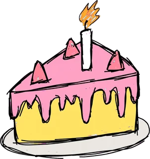

<!doctype html>
<html lang="es">
<head>
<meta charset="utf-8">
<meta name="viewport" content="width=device-width, initial-scale=1, viewport-fit=cover">
<meta name="robots" content="noindex, nofollow">
<title>Dina Física</title>
<link rel="icon" href="icon-192.png">
<link rel="manifest" href="manifest.json">
<meta name="theme-color" content="#ff7eb6">
<link rel="apple-touch-icon" href="apple-touch-icon.png">
<meta name="apple-mobile-web-app-capable" content="yes">
<meta name="mobile-web-app-capable" content="yes">
<meta name="apple-mobile-web-app-title" content="Dina Física">
<meta name="apple-mobile-web-app-status-bar-style" content="default">
<link rel="preconnect" href="https://fonts.googleapis.com">
<link rel="stylesheet" href="https://fonts.googleapis.com/css2?family=Fredoka:wght@500;600;700&family=Andika:wght@400;700&family=Atkinson+Hyperlegible:wght@400;700&family=Nunito:wght@600;800&display=swap">
<style>
/* Mundo único (rosa pastel de Dina Beat): pantalla de juego de una columna, escena arriba, pregunta y respuestas abajo */
:root{
  --crema:#fff7fb; --rosa:#ff7eb6; --rosa-osc:#e2559a; --tinta:#4a2a3f; --tinta-suave:#7b5a6f;
  --sombra:#e9b6cd; --blanco:#ffffff; --bien:#2fae78; --bien-fondo:#e3f7ee; --mal:#e2496b; --mal-fondo:#fde6ec;
  --b1:#ff7eb6; --b1s:#d9579a; --b2:#ff9a3c; --b2s:#d9741c; --b3:#8a5ce0; --b3s:#6a3fbf; --b4:#2fb37e; --b4s:#1f8a5f;
  --display:"Fredoka","Baloo 2","Trebuchet MS",system-ui,sans-serif;
  --texto:"Andika","Verdana","Segoe UI",system-ui,sans-serif;
  --pos:#e8553f; --neg:#3a7fd9; --vec:#6a4fd0; --vec2:#d9741c; --res:#1f8a5f;
  color-scheme:light;
}
html,body{height:100%}
:root{padding-top:env(safe-area-inset-top,0px);padding-bottom:env(safe-area-inset-bottom,0px)}
[hidden]{display:none!important}
img{max-width:100%}
body{margin:0;background:var(--crema);color:var(--tinta);font-family:var(--texto);font-size:16px;
  padding-left:max(16px,env(safe-area-inset-left,0px));padding-right:max(16px,env(safe-area-inset-right,0px));
  -webkit-tap-highlight-color:transparent;overflow-x:hidden}
body::after{content:"";position:fixed;inset:0;background:url(assets/nubes.webp) 0 0/220px repeat;opacity:.18;pointer-events:none;z-index:-1}
.app{max-width:460px;margin:0 auto;min-height:100%;display:flex;flex-direction:column;padding-block:12px 20px}
button{font:inherit;color:inherit;cursor:pointer;border:0;background:none}
button:focus-visible{outline:3px solid var(--tinta);outline-offset:2px}
.redondo{width:46px;height:46px;border-radius:50%;background:var(--blanco);box-shadow:0 3px 0 var(--sombra);font-size:20px;display:grid;place-items:center;flex:none}

/* ---------- Menú ---------- */
.top{display:flex;justify-content:space-between;align-items:center}
h1{font-family:var(--display);font-weight:700;font-size:44px;line-height:1;margin:6px 0 4px;text-align:center;color:var(--blanco);
  -webkit-text-stroke:0;text-shadow:0 2px 0 var(--rosa-osc),0 4px 0 var(--rosa),0 6px 10px rgba(226,85,154,.25);letter-spacing:.5px}
.lema{text-align:center;font-family:var(--display);font-weight:600;margin:0 0 6px;font-size:17px;text-wrap:balance}
.duo{display:flex;justify-content:center;align-items:flex-end;gap:8px;height:150px;margin:4px 0}
.duo img{height:100%;width:auto;object-fit:contain}
.duo img.d{height:78%;animation:bamboleo 1.4s ease-in-out infinite}
@keyframes bamboleo{50%{transform:translateY(-6px) rotate(-3deg)}}
.ayuda{text-align:center;color:var(--tinta-suave);font-weight:700;font-size:15px;margin:0 0 12px;text-wrap:balance}
.lista{display:flex;flex-direction:column;gap:10px}
.btn{display:flex;align-items:center;gap:10px;width:100%;padding:13px 16px;border-radius:18px;color:var(--blanco);text-align:left;
  font-family:var(--display);font-weight:600;font-size:19px;box-shadow:0 4px 0 var(--s,#0003);transition:transform .08s}
.btn:active{transform:translateY(3px);box-shadow:0 1px 0 var(--s,#0003)}
.btn .nom{flex:1;min-width:0;line-height:1.15}
.btn .nom small{display:block;font-family:var(--texto);font-weight:700;font-size:12.5px;opacity:.92;letter-spacing:.2px}
.btn .der{text-align:right;font-family:var(--texto);font-size:13px;font-weight:800;white-space:nowrap}
.btn .der .fr{font-size:17px;letter-spacing:-2px}
.btn.mix{background:var(--blanco);color:var(--tinta);--s:var(--sombra);border:2px solid var(--rosa)}
.chips{display:flex;gap:8px;justify-content:center;margin:14px 0 4px;flex-wrap:wrap}
.chip{padding:8px 14px;border-radius:999px;background:var(--blanco);box-shadow:0 2px 0 var(--sombra);font-weight:800;font-size:14px}
.chip[aria-pressed="true"]{background:var(--tinta);color:var(--blanco);box-shadow:none}
.pie{text-align:center;font-size:12px;color:var(--tinta-suave);margin-top:14px;line-height:1.5}

/* ---------- Juego ---------- */
.hud{display:flex;align-items:center;gap:10px}
.porciones{flex:1;display:flex;gap:2px;min-width:0}
.porciones span{flex:1;max-width:26px;aspect-ratio:1;background:url(assets/torta.webp) center/contain no-repeat;transition:opacity .3s,filter .3s}
.porciones span.comida{opacity:.25;filter:grayscale(1)}
.puntos{font-family:var(--display);font-weight:700;font-size:20px;display:flex;align-items:center;gap:4px;font-variant-numeric:tabular-nums}
.puntos img{height:24px}
.racha{font-size:12px;font-weight:800;color:var(--b2s);min-width:34px}
.puntitos{display:flex;gap:5px;justify-content:center;margin:8px 0 4px}
.puntitos i{width:9px;height:9px;border-radius:50%;background:var(--blanco);border:2px solid var(--sombra)}
.puntitos i.ok{background:var(--bien);border-color:var(--bien)}
.puntitos i.no{background:var(--mal);border-color:var(--mal)}
.puntitos i.ya{border-color:var(--tinta)}
.escena{position:relative;height:clamp(170px,27vh,230px);border-radius:24px;background:linear-gradient(#ffe9f3,#ffd9ea);overflow:hidden;
  box-shadow:inset 0 -18px 0 #ffc4dd}
.escena .riel{position:absolute;left:58%;top:8px;bottom:58px;width:6px;margin-left:-3px;border-radius:3px;
  background:repeating-linear-gradient(#ffb3d3 0 8px,transparent 8px 16px)}
.escena .torta{position:absolute;left:58%;bottom:6px;height:64px;transform:translateX(-50%)}
.escena .sofi{position:absolute;left:4%;bottom:4px;height:82%}
.escena .dina{position:absolute;left:58%;top:0;height:62px;transform:translate(-50%,0);will-change:top,transform}
.escena .dina.bob{animation:bob .6s ease-in-out infinite}
@keyframes bob{50%{margin-top:-4px}}
.escena .dina.huye{transition:transform .7s cubic-bezier(.3,.6,.4,1),opacity .7s;transform:translate(120%,-140%) rotate(-35deg) scale(.8);opacity:0}
.escena .dina.come{animation:come .55s ease-in-out}
@keyframes come{30%{transform:translate(-50%,0) scale(1.15) rotate(8deg)}60%{transform:translate(-50%,0) scale(.95) rotate(-8deg)}}
.torta.tiembla{animation:tiembla .4s}
@keyframes tiembla{25%{transform:translateX(-46%) rotate(-5deg)}75%{transform:translateX(-54%) rotate(5deg)}}
.gota{position:absolute;width:8px;height:8px;border-radius:50%;background:#7ec8ff;pointer-events:none;animation:gota .6s ease-out forwards}
@keyframes gota{to{transform:translate(var(--dx),var(--dy));opacity:0}}
.globo{position:absolute;left:50%;top:38%;transform:translate(-50%,-50%);font-family:var(--display);font-weight:700;font-size:26px;white-space:nowrap;
  pointer-events:none;animation:globo .9s ease-out forwards;text-shadow:0 2px 0 var(--blanco)}
@keyframes globo{0%{transform:translate(-50%,-30%) scale(.6);opacity:0}25%{transform:translate(-50%,-50%) scale(1.1);opacity:1}100%{transform:translate(-50%,-90%) scale(1);opacity:0}}
.reloj{position:absolute;right:10px;top:8px;font-weight:800;font-size:13px;background:var(--blanco);padding:3px 9px;border-radius:999px;color:var(--tinta-suave);font-variant-numeric:tabular-nums}

.tarjeta{background:var(--blanco);border-radius:22px;padding:14px 16px 16px;margin-top:12px;box-shadow:0 4px 0 var(--sombra)}
.tema{display:inline-block;font-size:12px;font-weight:800;letter-spacing:.6px;text-transform:uppercase;color:var(--blanco);padding:3px 10px;border-radius:999px;background:var(--tc)}
.preg{font-family:var(--texto);font-weight:700;font-size:19px;line-height:1.4;margin:10px 0 2px;text-wrap:pretty}
.opciones{display:flex;flex-direction:column;gap:9px;margin-top:12px}
.op{display:flex;gap:10px;align-items:flex-start;width:100%;text-align:left;padding:11px 13px;border-radius:16px;background:var(--crema);border:2px solid var(--sombra);
  font-weight:700;font-size:16px;line-height:1.35;transition:transform .08s,background .2s}
.op:active{transform:scale(.98)}
.op b{flex:none;width:26px;height:26px;border-radius:50%;background:var(--blanco);border:2px solid var(--sombra);display:grid;place-items:center;font-family:var(--display);font-size:14px}
.op span{min-width:0}
.op.bien{background:var(--bien-fondo);border-color:var(--bien)}
.op.bien b{background:var(--bien);border-color:var(--bien);color:var(--blanco)}
.op.mal{background:var(--mal-fondo);border-color:var(--mal)}
.op.mal b{background:var(--mal);border-color:var(--mal);color:var(--blanco)}
.op[disabled]{cursor:default}
.op[disabled]:not(.bien):not(.mal){opacity:.55}
.devolucion{margin-top:12px;border-radius:16px;padding:12px 14px;line-height:1.45}
.devolucion.si{background:var(--bien-fondo)}
.devolucion.no{background:var(--mal-fondo)}
.devolucion h3{margin:0 0 4px;font-family:var(--display);font-size:19px}
.devolucion p{margin:0}
.devolucion .sec{display:block;margin-top:6px;font-size:13px;color:var(--tinta-suave);font-weight:700}
.sig{margin-top:12px;width:100%;padding:13px;border-radius:16px;background:var(--rosa);color:var(--blanco);font-family:var(--display);font-weight:700;font-size:19px;box-shadow:0 4px 0 var(--rosa-osc)}
.sig:active{transform:translateY(3px);box-shadow:0 1px 0 var(--rosa-osc)}

/* ---------- Resultado ---------- */
.res-cab{text-align:center;margin-top:6px}
.res-cab img{height:120px}
.res-cab h2{font-family:var(--display);font-size:32px;margin:6px 0 2px;text-wrap:balance}
.res-cab .nota{font-family:var(--display);font-weight:700;font-size:22px}
.res-cab .estrellas{font-size:32px;letter-spacing:2px;margin:4px 0}
.res-cab p{margin:4px 0 0;color:var(--tinta-suave);font-weight:700;text-wrap:balance}
.temas{background:var(--blanco);border-radius:20px;padding:14px 16px;margin-top:14px;box-shadow:0 4px 0 var(--sombra);display:flex;flex-direction:column;gap:10px}
.temas h3,.falladas h3{margin:0;font-family:var(--display);font-size:18px}
.fila{display:grid;grid-template-columns:1fr auto;gap:4px 10px;align-items:center;font-weight:700;font-size:14px}
.barra{grid-column:1/-1;height:10px;border-radius:5px;background:var(--crema);overflow:hidden}
.barra i{display:block;height:100%;border-radius:5px;background:var(--tc)}
.falladas{margin-top:14px;display:flex;flex-direction:column;gap:10px}
.falla{background:var(--blanco);border-radius:18px;padding:12px 14px;border-left:0;box-shadow:0 3px 0 var(--sombra);line-height:1.4}
.falla .q{font-weight:800}
.falla .r{margin-top:6px;color:var(--bien);font-weight:800}
.falla .e{margin-top:4px;font-size:14px;color:var(--tinta-suave);font-weight:600}
.acciones{display:flex;flex-direction:column;gap:10px;margin-top:16px}
.todo-bien{text-align:center;font-weight:800;color:var(--bien);margin-top:10px}

/* ---------- Ejercicios en papel ---------- */
.btn.ej{background:var(--tinta);--s:#2c1726}
.cab-ej{display:flex;align-items:center;gap:10px;margin-bottom:6px}
.cab-ej h2{font-family:var(--display);font-size:26px;margin:0;flex:1;min-width:0}
.nivel{margin:16px 0 8px;font-family:var(--display);font-size:18px;font-weight:700}
.ej-item{display:flex;align-items:center;gap:10px;width:100%;text-align:left;padding:12px 14px;border-radius:16px;background:var(--blanco);box-shadow:0 3px 0 var(--sombra);font-weight:700;line-height:1.3}
.ej-item + .ej-item{margin-top:8px}
.ej-item .n{flex:none;width:30px;height:30px;border-radius:50%;display:grid;place-items:center;background:var(--crema);font-family:var(--display);border:2px solid var(--sombra)}
.ej-item .t{flex:1;min-width:0}
.ej-item .st{flex:none;font-size:20px}
.enun{font-family:var(--texto);font-weight:700;font-size:18px;line-height:1.5;margin:10px 0 0;text-wrap:pretty}
.papel{margin-top:10px;padding:10px 12px;border-radius:14px;background:var(--crema);border:2px dashed var(--sombra);font-weight:700;font-size:14px;color:var(--tinta-suave)}
.pasos{display:flex;flex-direction:column;gap:8px;margin-top:12px}
.paso{border-radius:14px;padding:10px 12px;background:var(--crema);line-height:1.7;font-size:17px;overflow-x:auto;animation:aparece .25s ease-out}
.paso b{display:block;font-size:12px;letter-spacing:.6px;text-transform:uppercase;color:var(--tinta-suave)}
.paso.final{background:var(--bien-fondo);font-weight:800}
@keyframes aparece{from{opacity:0;transform:translateY(6px)}}
.tal{display:grid;grid-template-columns:repeat(3,1fr);gap:8px;margin-top:10px}
.tal button{padding:12px 6px;border-radius:14px;background:var(--crema);border:2px solid var(--sombra);font-weight:800;font-size:15px}
.chip input{font:inherit;border:0;background:transparent;width:8em;outline:none;color:inherit}
.enviado{text-align:center;font-size:12px;color:var(--tinta-suave);margin-top:8px;font-weight:700}

/* ---------- fórmulas legibles ---------- */
sup{font-size:.72em;line-height:0;vertical-align:.6em}
sub{font-size:.72em;line-height:0;vertical-align:-.3em}
.fr{display:inline-flex;flex-direction:column;align-items:stretch;vertical-align:middle;margin:.2em .2em;line-height:1.3;text-align:center}
.fr>span{padding:0 .3em}
.hueco{display:inline-block;width:1.4em}
.fr>span:first-child{border-bottom:2px solid currentColor;padding-bottom:.15em}
.fr>span:last-child{padding-top:.15em}
.fig{width:100%;max-width:400px;height:auto;display:block;margin:12px auto 0;font-family:var(--texto);font-weight:700;font-size:14px}
.fig text{fill:var(--tinta)}
.fig .vt text{fill:inherit}
.fig .suave,.fig .cota{fill:var(--tinta-suave)}
.fig .sg{fill:#fff;font-size:22px;font-family:var(--display)}
.fig .eje{stroke:var(--tinta-suave);stroke-width:1.5}
.marco{background:var(--blanco);border:2px solid var(--crema);border-radius:14px;padding:4px 6px 8px;margin-top:10px}
.formula{background:var(--blanco);border-radius:16px;padding:12px 14px;box-shadow:0 3px 0 var(--sombra)}
.formula + .formula{margin-top:8px}
.formula .mat{font-size:21px;font-weight:700;line-height:1.7;overflow-x:auto}
.formula p{margin:6px 0 0;color:var(--tinta-suave);font-weight:700;font-size:15px;line-height:1.5}
.metodo{background:var(--blanco);border-radius:16px;padding:12px 14px 12px 36px;margin:0;box-shadow:0 3px 0 var(--sombra);line-height:1.6;font-weight:700}
.btn.form{background:var(--b4s);--s:#145c3f}

@media (prefers-reduced-motion:reduce){*{animation:none!important;transition:none!important}}
</style>
<script src="config.js"></script>
</head>
<body>
<div class="app" id="app"></div>

<script>
/* =====================  BANCO DE PREGUNTAS  =====================
   La primera opción de cada pregunta es la correcta (se mezclan al mostrarlas).
   s = sección del material del Prof. Riveros donde está explicado. */
const TEMAS = {
  b1:{nom:"Carga eléctrica", sub:"electrones, cuantización, conservación", c:"var(--b1)", s:"var(--b1s)"},
  b2:{nom:"Ley de Coulomb", sub:"fuerza entre dos cargas", c:"var(--b2)", s:"var(--b2s)"},
  b3:{nom:"Campo eléctrico", sub:"sentido, F = qE, líneas, conductores", c:"var(--b3)", s:"var(--b3s)"},
  b4:{nom:"Superposición", sub:"varias cargas y campo nulo", c:"var(--b4)", s:"var(--b4s)"}
};
const BANCO = [
/* ---------- Bloque 1: carga eléctrica ---------- */
{id:"c1",b:"b1",q:"¿Qué es la carga eléctrica?",o:["Una propiedad de la materia responsable de las interacciones eléctricas","La cantidad de átomos que tiene un cuerpo","La fuerza que hacen dos cuerpos entre sí","La energía que guarda un átomo"],e:"Es una propiedad física de la materia. Se representa con q o Q y hay dos tipos: positiva y negativa.",s:"Sección 4"},
{id:"c2",b:"b1",q:"¿Cuál es la unidad de carga en el Sistema Internacional?",o:["El coulomb (C)","El newton (N)","El newton por coulomb (N/C)","El electrón (e)"],e:"[q] = C. El newton es de fuerza y el N/C es de campo.",s:"Sección 4"},
{id:"c3",b:"b1",q:"¿Cuánto vale la carga elemental e?",o:["1,602 × 10⁻¹⁹ C","8,99 × 10⁹ C","1,602 × 10¹⁹ C","8,854 × 10⁻¹² C"],e:"e = 1,602 × 10⁻¹⁹ C. Es la carga de un protón (+e) o de un electrón (−e). 8,99 × 10⁹ es la constante k.",s:"Sección 5"},
{id:"c4",b:"b1",q:"¿Qué carga tiene un neutrón?",o:["Nula (0)","+e","−e","Depende del átomo"],e:"Protón: positiva. Electrón: negativa. Neutrón: carga nula.",s:"Sección 3"},
{id:"c5",b:"b1",q:"Un cuerpo tiene Q = −3,2 µC. ¿Qué le pasa?",o:["Tiene exceso de electrones","Tiene falta de electrones","Tiene exceso de protones","Está neutro"],e:"Si Q < 0 el cuerpo tiene electrones de más. Si Q > 0, le faltan electrones.",s:"Sección 6"},
{id:"c6",b:"b1",q:"¿Cuántos electrones de más tiene un cuerpo con Q = −3,2 µC?",o:["≈ 2,0 × 10¹³ electrones","≈ 2,0 × 10⁻¹³ electrones","≈ 5,1 × 10⁻²⁵ electrones","≈ 3,2 × 10⁶ electrones"],e:"n = |Q| / e = (3,2 × 10⁻⁶) / (1,602 × 10⁻¹⁹) ≈ 2,0 × 10¹³. Primero se pasa µC a C.",s:"Secciones 6 y 7"},
{id:"c7",b:"b1",q:"¿Qué significa que la carga esté cuantizada?",o:["Que siempre es un múltiplo entero de e (Q = ne)","Que puede tener cualquier valor","Que no se crea ni se destruye","Que se mide en N/C"],e:"Q = n·e con n entero. Por eso se puede contar cuántos electrones se pasaron.",s:"Sección 6"},
{id:"c8",b:"b1",q:"¿Qué dice la conservación de la carga?",o:["En un sistema aislado la carga total no cambia: los electrones solo pasan de un cuerpo a otro","Al frotar dos cuerpos se crea carga nueva","La carga desaparece cuando un cuerpo se descarga","Los protones pasan de un cuerpo a otro"],e:"Q inicial = Q final. Lo que se mueve son electrones, no se crea carga.",s:"Sección 8"},
{id:"c9",b:"b1",q:"Después de frotarlo, un cuerpo queda con carga positiva. ¿Por qué?",o:["Perdió electrones","Ganó protones","Ganó electrones","Se crearon cargas positivas"],e:"Queda con menos electrones que protones. Los protones no se mueven en la electrización.",s:"Secciones 6 y 8"},
{id:"c10",b:"b1",q:"¿Qué pasa entre dos cargas negativas?",o:["Se repelen","Se atraen","No interactúan","Depende de la distancia"],e:"Mismo signo se repelen: (−, −) → repulsión, igual que (+, +).",s:"Sección 9"},
{id:"c11",b:"b1",q:"¿Qué pasa entre una carga positiva y una negativa?",o:["Se atraen","Se repelen","No interactúan","Se anulan y desaparecen"],e:"Signos opuestos se atraen: (+, −) → atracción. Las fuerzas apuntan una hacia la otra.",s:"Sección 9"},
{id:"c12",b:"b1",q:"¿A cuántos coulomb equivale 1 µC (microcoulomb)?",o:["10⁻⁶ C","10⁻³ C","10⁻⁹ C","10⁶ C"],e:"1 µC = 10⁻⁶ C y 1 nC = 10⁻⁹ C. No convertir es el error más frecuente.",s:"Secciones 20 y 50"},
{id:"c13",b:"b1",q:"¿A cuántos coulomb equivale 1 nC (nanocoulomb)?",o:["10⁻⁹ C","10⁻⁶ C","10⁻¹² C","10⁹ C"],e:"1 nC = 10⁻⁹ C.",s:"Sección 20"},
{id:"c14",b:"b1",q:"Un átomo es eléctricamente neutro cuando…",o:["tiene la misma cantidad de protones que de electrones","no tiene electrones","tiene más neutrones que protones","tiene solo neutrones"],e:"Neutro = igual cantidad de protones y electrones; sus cargas se compensan.",s:"Sección 3"},

/* ---------- Bloque 2: Ley de Coulomb ---------- */
{id:"k1",b:"b2",q:"¿Qué dice la Ley de Coulomb?",o:["F es proporcional al producto de las cargas e inversamente proporcional al cuadrado de la distancia","F es proporcional a la distancia","F es inversamente proporcional a la distancia (sin cuadrado)","F es proporcional a la suma de las cargas"],e:"F = k·|q₁q₂| / r².",s:"Sección 11"},
{id:"k2",b:"b2",q:"Si la distancia entre dos cargas se duplica, la fuerza…",o:["se reduce a la cuarta parte (F/4)","se reduce a la mitad (F/2)","se duplica (2F)","se cuadruplica (4F)"],e:"F ∝ 1/r². Con 2r queda 1/(2)² = 1/4.",s:"Sección 15.3"},
{id:"k3",b:"b2",q:"Si la distancia se triplica, la fuerza…",o:["se reduce a la novena parte (F/9)","se reduce a la tercera parte (F/3)","se reduce a la sexta parte (F/6)","se hace 9 veces mayor"],e:"1/(3)² = 1/9.",s:"Sección 15.3"},
{id:"k4",b:"b2",q:"Si la distancia se reduce a la mitad, la fuerza…",o:["se cuadruplica (4F)","se reduce a la mitad","se duplica (2F)","se reduce a la cuarta parte"],e:"Con r/2 queda 1/(1/2)² = 4. Más cerca, mucha más fuerza.",s:"Sección 15.3"},
{id:"k5",b:"b2",q:"Si una de las cargas se duplica (lo demás igual), la fuerza…",o:["se duplica (2F)","se cuadruplica (4F)","no cambia","se reduce a la mitad"],e:"F es proporcional a cada carga: 2q → 2F.",s:"Sección 15.1"},
{id:"k6",b:"b2",q:"Si las dos cargas se duplican (misma distancia), la fuerza…",o:["se cuadruplica (4F)","se duplica (2F)","no cambia","se reduce a la cuarta parte"],e:"(2q₁)(2q₂) = 4q₁q₂ → 4F.",s:"Sección 15.2"},
{id:"k7",b:"b2",q:"Una carga se duplica y la distancia también se duplica. La fuerza…",o:["queda a la mitad (F/2)","no cambia","se duplica","queda a la cuarta parte"],e:"La carga multiplica por 2 y la distancia divide por 4: 2/4 = 1/2.",s:"Sección 15"},
{id:"k8",b:"b2",q:"¿Cuánto vale la constante de Coulomb k en el vacío?",o:["8,99 × 10⁹ N·m²/C²","1,602 × 10⁻¹⁹ C","8,854 × 10⁻¹² C²/(N·m²)","9,8 m/s²"],e:"k = 8,99 × 10⁹ N·m²/C² (se puede usar 9,0 × 10⁹). 8,854 × 10⁻¹² es ε₀.",s:"Sección 13"},
{id:"k9",b:"b2",q:"q₁ = +4 µC y q₂ = −6 µC están a 0,30 m. ¿Cuál es la fuerza?",o:["≈ 2,40 N, de atracción","≈ 2,40 N, de repulsión","≈ 0,72 N, de atracción","≈ 2,40 × 10⁻⁶ N, de atracción"],e:"F = (8,99 × 10⁹)(24 × 10⁻¹²) / 0,09 ≈ 2,40 N. Signos opuestos → atracción. (0,72 N sale si no elevás r al cuadrado.)",s:"Sección 21"},
{id:"k10",b:"b2",q:"Dos cargas de +2 µC y +7 µC están a 0,25 m. ¿Cuál es la fuerza?",o:["≈ 2,01 N, de repulsión","≈ 2,01 N, de atracción","≈ 0,50 N, de repulsión","≈ 2,01 × 10⁻³ N, de repulsión"],e:"F = (8,99 × 10⁹)(14 × 10⁻¹²) / (0,25)² ≈ 2,01 N. Las dos son positivas → repulsión.",s:"Ejercicio básico 2"},
{id:"k11",b:"b2",q:"+5 µC y −8 µC están separadas 40 cm. ¿Cuál es la fuerza?",o:["≈ 2,25 N, de atracción","≈ 2,25 × 10⁻⁴ N, de atracción","≈ 2,25 N, de repulsión","≈ 0,90 N, de atracción"],e:"Primero 40 cm = 0,40 m. F = (8,99 × 10⁹)(40 × 10⁻¹²) / 0,16 ≈ 2,25 N. (2,25 × 10⁻⁴ sale si usás 40 sin convertir.)",s:"Ejercicio básico 3"},
{id:"k12",b:"b2",q:"Antes de usar la Ley de Coulomb, ¿cómo se escriben 40 cm?",o:["0,40 m","40 m","4 m","0,040 m"],e:"1 cm = 10⁻² m, entonces 40 cm = 0,40 m. Usar centímetros directo es un error frecuente.",s:"Secciones 20 y 50"},
{id:"k13",b:"b2",q:"q₁ hace una fuerza sobre q₂, y q₂ una sobre q₁. Esas dos fuerzas…",o:["tienen igual módulo y sentidos opuestos (3.ª ley de Newton)","son más grandes sobre la carga más chica","apuntan para el mismo lado","se anulan porque actúan sobre el mismo cuerpo"],e:"F₁₂ = −F₂₁. Igual módulo, misma dirección, sentidos opuestos, y actúan sobre cuerpos distintos (por eso no se anulan).",s:"Sección 17"},
{id:"k14",b:"b2",q:"¿Qué dirección tiene la fuerza eléctrica entre dos cargas puntuales?",o:["La de la recta que une las dos cargas","Siempre horizontal","Perpendicular a la recta que las une","Siempre hacia abajo"],e:"La dirección es la línea que une las cargas; el sentido depende de si se atraen o se repelen.",s:"Sección 16"},
{id:"k15",b:"b2",q:"Dos cargas iguales a 0,15 m se hacen una fuerza de 3,6 N. ¿Cuánto vale cada carga?",o:["≈ 3,0 µC","≈ 9,0 µC","≈ 0,3 µC","≈ 30 µC"],e:"q² = F·r² / k = (3,6)(0,0225) / (8,99 × 10⁹) ≈ 9,0 × 10⁻¹² → q ≈ 3,0 × 10⁻⁶ C. ¡No te olvides de la raíz!",s:"Ejercicio intermedio 1"},
{id:"k16",b:"b2",q:"¿A qué distancia deben estar 2 µC y 5 µC para que F = 1,0 N?",o:["≈ 0,30 m","≈ 0,09 m","≈ 3,0 m","≈ 0,90 m"],e:"r = √(k·q₁q₂ / F) = √(8,99 × 10⁹ · 10 × 10⁻¹²) = √0,0899 ≈ 0,30 m. (0,09 es r², falta la raíz.)",s:"Ejercicio intermedio 2"},

/* ---------- Bloque 3: campo eléctrico ---------- */
{id:"e1",b:"b3",q:"¿Cómo se define el campo eléctrico?",o:["E = F / q₀, con una carga de prueba positiva q₀","E = F · q₀","E = k·|q₁q₂| / r²","E = q₀ / F"],e:"Es la fuerza por unidad de carga sobre una carga de prueba positiva.",s:"Sección 25"},
{id:"e2",b:"b3",q:"¿Cuál es la unidad del campo eléctrico?",o:["N/C","N","C/N","N·m²/C²"],e:"[E] = newton por coulomb. N es de fuerza; N·m²/C² es la unidad de k.",s:"Sección 26"},
{id:"e3",b:"b3",q:"¿Hacia dónde apunta el campo de una carga positiva?",o:["Radialmente hacia afuera, alejándose de la carga","Hacia la carga","En círculos alrededor de la carga","Una carga positiva no tiene campo"],e:"Q > 0 ⇒ campo hacia afuera.",s:"Secciones 29 y 30"},
{id:"e4",b:"b3",q:"¿Hacia dónde apunta el campo de una carga negativa?",o:["Radialmente hacia la carga","Hacia afuera, alejándose de la carga","En círculos alrededor de la carga","Para arriba"],e:"Q < 0 ⇒ campo hacia adentro. Decir que apunta hacia afuera es un error frecuente.",s:"Secciones 29 y 31"},
{id:"e5",b:"b3",q:"El sentido del campo se define como el sentido de la fuerza sobre…",o:["una carga de prueba positiva","un electrón","la carga fuente","cualquier carga, da igual el signo"],e:"Siempre con carga de prueba positiva; por eso una carga negativa siente fuerza al revés del campo.",s:"Secciones 29 y 33"},
{id:"e6",b:"b3",q:"Una carga negativa dentro de un campo eléctrico siente una fuerza…",o:["de sentido contrario al campo","en el mismo sentido que el campo","perpendicular al campo","nula"],e:"F = qE y q < 0, así que F y E apuntan al revés.",s:"Sección 33"},
{id:"e7",b:"b3",q:"Una carga positiva dentro de un campo eléctrico siente una fuerza…",o:["en el mismo sentido que el campo","de sentido contrario al campo","perpendicular al campo","nula"],e:"F = qE con q > 0: mismo sentido.",s:"Sección 33"},
{id:"e8",b:"b3",q:"Para una carga puntual, si te alejás al doble de distancia, el campo…",o:["se reduce a la cuarta parte","se reduce a la mitad","no cambia","se duplica"],e:"E = k·|Q| / r², así que E ∝ 1/r², igual que la fuerza.",s:"Sección 28"},
{id:"e9",b:"b3",q:"q = −3,0 µC está en un campo E = 4,0 × 10⁵ N/C. ¿Qué fuerza siente?",o:["1,20 N, opuesta al campo","1,20 N, en el sentido del campo","1,2 × 10¹² N, opuesta al campo","0,75 N, opuesta al campo"],e:"F = |q|·E = (3,0 × 10⁻⁶)(4,0 × 10⁵) = 1,20 N. Carga negativa → al revés del campo.",s:"Sección 44"},
{id:"e10",b:"b3",q:"¿Qué campo produce Q = +6,0 µC a 0,20 m?",o:["≈ 1,35 × 10⁶ N/C, hacia afuera","≈ 2,70 × 10⁵ N/C, hacia afuera","≈ 1,35 × 10⁶ N/C, hacia la carga","≈ 1,35 × 10⁶ N, hacia afuera"],e:"E = (8,99 × 10⁹)(6,0 × 10⁻⁶) / 0,04 ≈ 1,35 × 10⁶ N/C. Positiva → hacia afuera. (2,70 × 10⁵ sale sin elevar al cuadrado.)",s:"Sección 43"},
{id:"e11",b:"b3",q:"¿Qué campo produce Q = −6 µC a 0,20 m?",o:["≈ 1,35 × 10⁶ N/C, apuntando hacia la carga","≈ 1,35 × 10⁶ N/C, hacia afuera","≈ −1,35 × 10⁶ N/C, hacia afuera","≈ 2,70 × 10⁵ N/C, hacia la carga"],e:"El módulo usa |Q|: E ≈ 1,35 × 10⁶ N/C. El signo negativo se ve en el sentido: hacia la carga.",s:"Ejercicio básico 5"},
{id:"e12",b:"b3",q:"¿Puede haber campo eléctrico en un punto donde no hay ninguna carga de prueba?",o:["Sí, lo producen las cargas fuente; la de prueba solo sirve para medirlo","No, sin carga de prueba no hay campo","Solo si la carga fuente es positiva","Solo dentro de un conductor"],e:"En E = k·|Q| / r² la carga de prueba ni aparece. Creer que el campo depende de ella es un error frecuente.",s:"Secciones 27 y 34"},
{id:"e13",b:"b3",q:"¿Por qué las líneas de campo nunca se cruzan?",o:["Porque en cada punto el campo tiene una sola dirección","Porque las líneas se repelen entre sí","Porque son todas paralelas","Porque salen siempre de cargas negativas"],e:"Si se cruzaran, en ese punto el campo tendría dos direcciones a la vez, y eso es imposible.",s:"Sección 37"},
{id:"e14",b:"b3",q:"Donde las líneas de campo están más juntas, el campo es…",o:["más intenso","más débil","nulo","siempre uniforme"],e:"La densidad de líneas indica la intensidad del campo.",s:"Sección 36"},
{id:"e15",b:"b3",q:"Las líneas de campo eléctrico…",o:["salen de las cargas positivas y llegan a las negativas","salen de las negativas y llegan a las positivas","forman círculos cerrados alrededor de la carga","se cruzan entre las dos cargas"],e:"Salen de + y llegan a − (o se van al infinito). El campo es tangente a la línea.",s:"Sección 36"},
{id:"e16",b:"b3",q:"¿Cómo es un campo eléctrico uniforme?",o:["Igual módulo, dirección y sentido en toda la región: líneas rectas, paralelas y a la misma distancia","El que produce una carga puntual","Uno que cambia con la distancia","Uno con líneas que se cruzan"],e:"Se logra aproximadamente entre dos placas paralelas con cargas opuestas.",s:"Sección 39"},
{id:"e17",b:"b3",q:"El campo de una carga puntual es un ejemplo de campo…",o:["no uniforme, porque cambia con la distancia","uniforme","nulo","que no tiene dirección"],e:"E = k·|Q| / r² depende de r, así que E ≠ constante.",s:"Sección 40"},
{id:"e18",b:"b3",q:"En un conductor en equilibrio electrostático…",o:["el campo adentro es cero y la carga de más queda en la superficie","el campo adentro es máximo","la carga se reparte por todo el interior","el campo afuera es paralelo a la superficie"],e:"E = 0 adentro, carga en la superficie externa y campo perpendicular justo afuera (blindaje electrostático).",s:"Sección 41"},
{id:"e19",b:"b3",q:"¿Cuál es la diferencia entre campo y fuerza?",o:["El campo es una propiedad del espacio (N/C); la fuerza es lo que siente una carga puesta ahí (N)","Son lo mismo con distinto nombre","El campo depende de la carga de prueba y la fuerza no","La fuerza se mide en N/C y el campo en N"],e:"Se relacionan con F = qE.",s:"Sección 34"},
{id:"e20",b:"b3",q:"Una partícula siente 0,25 N en un campo de 5 × 10⁴ N/C. ¿Cuánto vale su carga?",o:["5 µC","12 500 C","0,5 µC","50 µC"],e:"|q| = F / E = 0,25 / (5 × 10⁴) = 5 × 10⁻⁶ C = 5 µC.",s:"Ejercicio intermedio 4"},

/* ---------- Bloque 4: superposición y campo nulo ---------- */
{id:"s1",b:"b4",q:"¿Qué dice el principio de superposición?",o:["La fuerza (o campo) total es la suma vectorial de lo que produce cada carga","Se suman los módulos sin mirar el sentido","Solo cuenta la carga más cercana","Solo cuenta la carga más grande"],e:"F_R = ΣFᵢ y E_R = ΣEᵢ, sumando como vectores. Sumar como números es un error frecuente.",s:"Secciones 19 y 35"},
{id:"s2",b:"b4",q:"Dos cargas positivas iguales. ¿Cuánto vale el campo en el punto medio?",o:["Cero: los dos campos son iguales y opuestos","El doble del campo de una","El campo de una sola","Depende del signo de la carga de prueba"],e:"Cada carga sí produce campo, pero en el medio se cancelan.",s:"Sección 45"},
{id:"s3",b:"b4",q:"+q y −q (igual valor). ¿Qué pasa con el campo en el punto medio?",o:["Los dos apuntan hacia la negativa y se suman","Se cancelan","Apuntan hacia la positiva y se suman","Es perpendicular a la línea de las cargas"],e:"El de + se aleja de + y el de − va hacia −: los dos apuntan de + a −.",s:"Sección 46"},
{id:"s4",b:"b4",q:"+4 µC y −4 µC a 0,60 m. ¿Cuánto vale el campo en el punto medio?",o:["≈ 7,99 × 10⁵ N/C, de la + hacia la −","0","≈ 4,00 × 10⁵ N/C, de la + hacia la −","≈ 7,99 × 10⁵ N/C, de la − hacia la +"],e:"Cada uno: (8,99 × 10⁹)(4 × 10⁻⁶) / 0,09 ≈ 4,0 × 10⁵. Mismo sentido → se suman: ≈ 7,99 × 10⁵ N/C.",s:"Sección 46"},
{id:"s5",b:"b4",q:"Dos cargas del MISMO signo. ¿Dónde puede estar el punto de campo cero?",o:["Entre las dos cargas, más cerca de la menor","Afuera, del lado de la mayor","Afuera, del lado de la menor","No existe nunca"],e:"Entre ellas los campos apuntan al revés. Queda más cerca de la menor para compensar su menor valor.",s:"Sección 48"},
{id:"s6",b:"b4",q:"Cargas de signo OPUESTO y distinto valor. ¿Dónde puede estar el punto de campo cero?",o:["Afuera del segmento, del lado de la carga menor","Entre las dos cargas","Afuera, del lado de la carga mayor","Justo en el medio"],e:"Entre ellas los campos se suman, así que el cero solo puede estar afuera, cerca de la menor.",s:"Sección 48"},
{id:"s7",b:"b4",q:"+4 µC en x = 0 y +1 µC en x = 0,30 m. ¿Dónde es E = 0?",o:["x = 0,20 m","x = 0,10 m","x = 0,15 m","x = 0,60 m"],e:"4/x² = 1/(0,30 − x)² → 2/x = 1/(0,30 − x) → x = 0,20 m. Queda más cerca de la carga chica.",s:"Sección 48"},
{id:"s8",b:"b4",q:"+9 µC en x = 0 y −4 µC en x = 0,30 m. ¿Dónde es E = 0?",o:["x = 0,90 m","x = 0,18 m","x = 0,12 m","x = −0,60 m"],e:"Signos opuestos → afuera, del lado de la menor: 9/x² = 4/(x − 0,30)² → x = 0,90 m.",s:"Sección 48"},
{id:"s9",b:"b4",q:"Eₓ = 3,0 × 10⁴ N/C y E_y = 4,0 × 10⁴ N/C. ¿Cuánto vale E_R?",o:["5,0 × 10⁴ N/C","7,0 × 10⁴ N/C","1,0 × 10⁴ N/C","2,5 × 10⁴ N/C"],e:"E_R = √(Eₓ² + E_y²) = √(9 + 16) × 10⁴ = 5,0 × 10⁴ N/C. Sumar 3 + 4 = 7 es tratarlos como números.",s:"Sección 47"},
{id:"s10",b:"b4",q:"Con Eₓ = 3,0 × 10⁴ y E_y = 4,0 × 10⁴ N/C, ¿qué ángulo forma E_R con el eje +x?",o:["≈ 53,1°","≈ 36,9°","45°","90°"],e:"tan θ = E_y / Eₓ = 4/3 → θ ≈ 53,1°.",s:"Sección 47"},
{id:"s11",b:"b4",q:"Sobre una carga actúan 5,39 N hacia la izquierda y 1,80 N hacia la derecha. ¿Resultante?",o:["≈ 3,60 N hacia la izquierda","≈ 7,19 N hacia la izquierda","≈ 3,60 N hacia la derecha","1,80 N hacia la derecha"],e:"Misma dirección y sentidos opuestos: se restan y gana la más grande.",s:"Sección 19"},
{id:"s12",b:"b4",q:"Sobre una carga actúan 1,35 N y 1,20 N, las dos hacia la derecha. ¿Resultante?",o:["2,55 N hacia la derecha","0,15 N hacia la derecha","2,55 N hacia la izquierda","1,80 N hacia la derecha"],e:"Mismo sentido → se suman: 1,35 + 1,20 = 2,55 N.",s:"Sección 23"},
{id:"s13",b:"b4",q:"Una fuerza de 0,60 N en −x y otra de 0,45 N en +y. ¿Módulo de la resultante?",o:["≈ 0,75 N","1,05 N","0,15 N","≈ 0,52 N"],e:"Son perpendiculares: F_R = √(0,60² + 0,45²) = √0,5625 = 0,75 N.",s:"Secciones 18 y 19"},
{id:"s14",b:"b4",q:"Cuatro cargas iguales en los vértices de un cuadrado. ¿Campo en el centro?",o:["Cero, se cancelan de a pares opuestos","Cuatro veces el de una carga","El doble del de una carga","Apunta hacia una de las esquinas"],e:"Cada carga produce campo en el centro, pero los de vértices opuestos son iguales y opuestos.",s:"Secciones 35 y 45"},
{id:"s15",b:"b4",q:"Tres cargas positivas iguales en un triángulo equilátero. ¿La fuerza sobre una de ellas?",o:["Apunta hacia afuera del triángulo, por la bisectriz del vértice","Es cero","Apunta hacia el centro del triángulo","Apunta hacia una de las otras cargas"],e:"Las dos repulsiones forman 60°: las componentes de costado se cancelan y las de afuera se suman.",s:"Sección 19"},
{id:"s16",b:"b4",q:"En un punto el campo resultante es cero. Si ponés ahí una carga de 5 µC…",o:["no siente fuerza eléctrica","siente una fuerza muy grande","siente fuerza hacia la carga más cercana","se vuelve neutra"],e:"F = qE = q·0 = 0, sea cual sea la carga.",s:"Secciones 32 y 48"},
{id:"s17",b:"b4",q:"¿Cuál es la diferencia entre E = 0 y F = 0?",o:["E = 0 es del punto del espacio; F = 0 es de una carga concreta (también pasa si esa carga es 0)","Son exactamente lo mismo","E = 0 solo pasa dentro de conductores","F = 0 significa que no hay cargas cerca"],e:"F = qE: F es cero si E = 0 o si q = 0. Un cuerpo sin carga no siente fuerza aunque haya campo.",s:"Secciones 32 y 34"},
{id:"s18",b:"b4",q:"¿Qué describe la secuencia Q → E → q → F?",o:["La carga fuente crea un campo, y otra carga puesta en ese campo siente F = qE","La fuerza crea la carga","El campo crea a la carga fuente","q y Q se suman para dar F"],e:"Combinando E = k·|Q| / r² con F = qE sale de nuevo la Ley de Coulomb.",s:"Secciones 24 y 49"},
{id:"s19",b:"b4",q:"Dos cargas positivas iguales están a 0,80 m. ¿Cuánto vale el campo en el punto medio?",o:["Cero","El doble del campo de una","No se puede saber sin el valor de las cargas","Depende de la carga de prueba"],e:"Por simetría los dos campos se cancelan, sin importar cuánto valgan las cargas.",s:"Ejercicio intermedio 5"}
];

/* =====================  EJERCICIOS EN PAPEL  =====================
   Los del material (secciones 52 a 54). Los avanzados no traen números en el material:
   se usan los mismos datos que en el PDF de ejercicios resueltos.
   Escritura: [[arriba::abajo]] = fracción · q₁, F_Rx = subíndice · 10⁻⁶ = potencia · \n = renglón nuevo.
   fig = dibujo del enunciado · figR = dibujo con los vectores de la respuesta. */
const NIVELES = {basico:"Nivel básico", inter:"Nivel intermedio", avanz:"Nivel avanzado"};
const K = "(8,99 × 10⁹)";
const EJ = [
{id:"b1",n:"basico",t:"Número de electrones",q:"Determine el número de electrones correspondiente a una carga Q = −3,2 µC.",
 p:[["Datos y conversión","Q = −3,2 µC = −3,2 × 10⁻⁶ C\ne = 1,602 × 10⁻¹⁹ C"],["Ecuación","n = [[|Q|::e]]"],["Cálculo","n = [[3,2 × 10⁻⁶::1,602 × 10⁻¹⁹]] ≈ 2,0 × 10¹³"]],
 r:"n ≈ 2,0 × 10¹³ electrones. Como Q es negativa, son electrones de más."},
{id:"b2",n:"basico",t:"Fuerza entre +2 µC y +7 µC",q:"Dos cargas q₁ = +2 µC y q₂ = +7 µC están separadas r = 0,25 m. Determine la fuerza eléctrica.",
 fig:{w:360,h:110,c:[[90,50,"+","q₁ = +2 µC"],[270,50,"+","q₂ = +7 µC"]],cota:[[90,92,270,92,"0,25 m"]]},
 figR:{w:360,h:110,c:[[90,50,"+","q₁"],[270,50,"+","q₂"]],v:[[90,50,30,50,"F",1],[270,50,330,50,"F",1]],cota:[[90,92,270,92,"0,25 m"]]},
 p:[["Datos y conversión","q₁ = 2 × 10⁻⁶ C\nq₂ = 7 × 10⁻⁶ C\nr = 0,25 m"],["Atracción o repulsión","Las dos son positivas → repulsión."],["Ecuación","F = k · [[|q₁ · q₂|::r²]]"],["Cálculo",`F = [[${K} · (2 × 10⁻⁶) · (7 × 10⁻⁶)::(0,25)²]]\nF = [[0,126::0,0625]] ≈ 2,01 N`]],
 r:"F ≈ 2,01 N, en la recta que une las cargas, de repulsión: cada una empuja a la otra hacia afuera."},
{id:"b3",n:"basico",t:"Fuerza entre +5 µC y −8 µC",q:"Dos cargas q₁ = +5 µC y q₂ = −8 µC están separadas 40 cm. Determine el módulo de la fuerza e indique si hay atracción o repulsión.",
 fig:{w:360,h:110,c:[[90,50,"+","q₁ = +5 µC"],[270,50,"−","q₂ = −8 µC"]],cota:[[90,92,270,92,"40 cm"]]},
 figR:{w:360,h:110,c:[[90,50,"+","q₁"],[270,50,"−","q₂"]],v:[[90,50,150,50,"F",1],[270,50,210,50,"F",1]],cota:[[90,92,270,92,"0,40 m"]]},
 p:[["Datos y conversión","q₁ = 5 × 10⁻⁶ C\nq₂ = −8 × 10⁻⁶ C\nr = 40 cm = 0,40 m (¡convertir!)"],["Atracción o repulsión","Signos opuestos → atracción."],["Ecuación","F = k · [[|q₁ · q₂|::r²]]"],["Cálculo",`F = [[${K} · (5 × 10⁻⁶) · (8 × 10⁻⁶)::(0,40)²]]\nF = [[0,360::0,16]] ≈ 2,25 N`]],
 r:"F ≈ 2,25 N, de atracción: las fuerzas apuntan una hacia la otra."},
{id:"b4",n:"basico",t:"Campo de Q = +4 µC",q:"Una carga Q = +4 µC produce un campo eléctrico. Determine su intensidad a r = 0,30 m.",
 fig:{w:360,h:110,c:[[90,50,"+","Q = +4 µC"]],pt:[[270,50,"P"]],cota:[[90,92,270,92,"0,30 m"]]},
 figR:{w:360,h:110,c:[[90,50,"+","Q"]],pt:[[270,50,"P"]],v:[[270,50,340,50,"E",2]],cota:[[90,92,270,92,"0,30 m"]]},
 p:[["Datos y conversión","Q = 4 × 10⁻⁶ C\nr = 0,30 m"],["Sentido","Q > 0 → el campo apunta hacia afuera."],["Ecuación","E = k · [[|Q|::r²]]"],["Cálculo",`E = [[${K} · (4 × 10⁻⁶)::(0,30)²]]\nE = [[35 960::0,09]] ≈ 4,0 × 10⁵ N/C`]],
 r:"E ≈ 4,0 × 10⁵ N/C, radial, alejándose de la carga."},
{id:"b5",n:"basico",t:"Campo de Q = −6 µC",q:"Una carga Q = −6 µC produce un campo eléctrico a r = 0,20 m. Determine módulo y sentido.",
 fig:{w:360,h:110,c:[[90,50,"−","Q = −6 µC"]],pt:[[270,50,"P"]],cota:[[90,92,270,92,"0,20 m"]]},
 figR:{w:360,h:110,c:[[90,50,"−","Q"]],pt:[[270,50,"P"]],v:[[270,50,200,50,"E",2]],cota:[[90,92,270,92,"0,20 m"]]},
 p:[["Datos y conversión","Q = −6 × 10⁻⁶ C\nr = 0,20 m"],["Sentido","Q < 0 → el campo apunta hacia la carga."],["Ecuación","E = k · [[|Q|::r²]]  (el módulo usa |Q|, sin el signo)"],["Cálculo",`E = [[${K} · (6 × 10⁻⁶)::(0,20)²]]\nE = [[53 940::0,04]] ≈ 1,35 × 10⁶ N/C`]],
 r:"E ≈ 1,35 × 10⁶ N/C, radial, apuntando hacia la carga."},
{id:"i1",n:"inter",t:"Dos cargas iguales que hacen 3,6 N",q:"Dos cargas iguales ejercen una fuerza F = 3,6 N cuando están separadas r = 0,15 m. Determine el módulo de cada carga.",
 p:[["Datos","F = 3,6 N\nr = 0,15 m\nq₁ = q₂ = q"],["Despeje","F = k · [[q²::r²]]   →   q² = [[F · r²::k]]"],["Cálculo",`q² = [[3,6 · (0,15)²::8,99 × 10⁹]] = [[0,081::8,99 × 10⁹]] ≈ 9,0 × 10⁻¹²`],["Raíz","q = √(9,0 × 10⁻¹²) ≈ 3,0 × 10⁻⁶ C"]],
 r:"|q| ≈ 3,0 µC cada una."},
{id:"i2",n:"inter",t:"¿A qué distancia para 1,0 N?",q:"¿A qué distancia deben encontrarse dos cargas de 2 µC y 5 µC para que la fuerza sea F = 1,0 N?",
 p:[["Datos y conversión","q₁ = 2 × 10⁻⁶ C\nq₂ = 5 × 10⁻⁶ C\nF = 1,0 N"],["Despeje","F = k · [[|q₁ · q₂|::r²]]   →   r² = [[k · |q₁ · q₂|::F]]"],["Cálculo",`r² = [[${K} · (10 × 10⁻¹²)::1,0]] = 0,0899 m²`],["Raíz","r = √0,0899 ≈ 0,30 m"]],
 r:"r ≈ 0,30 m."},
{id:"i3",n:"inter",t:"Carga negativa en un campo",q:"Una carga q = −2 µC se encuentra en un campo E = 6 × 10⁴ N/C. Determine la fuerza.",
 fig:{w:360,h:110,campo:1,c:[[180,55,"−","q = −2 µC"]]},
 figR:{w:360,h:110,campo:1,c:[[180,55,"−","q"]],v:[[180,55,110,55,"F",1]]},
 p:[["Datos y conversión","q = −2 × 10⁻⁶ C\nE = 6 × 10⁴ N/C"],["Ecuación","F = |q| · E   (el sentido sale del signo)"],["Cálculo","F = (2 × 10⁻⁶) · (6 × 10⁴) = 0,12 N"],["Sentido","q < 0 → la fuerza va al revés del campo."]],
 r:"F = 0,12 N, de sentido contrario al campo."},
{id:"i4",n:"inter",t:"¿Cuánta carga tiene?",q:"Una partícula experimenta una fuerza F = 0,25 N en un campo E = 5 × 10⁴ N/C. Determine el módulo de su carga.",
 p:[["Datos","F = 0,25 N\nE = 5 × 10⁴ N/C"],["Despeje","F = |q| · E   →   |q| = [[F::E]]"],["Cálculo","|q| = [[0,25::5 × 10⁴]] = 5 × 10⁻⁶ C"]],
 r:"|q| = 5 × 10⁻⁶ C = 5 µC."},
{id:"i5",n:"inter",t:"Punto medio entre cargas iguales",q:"Dos cargas positivas iguales se encuentran separadas 0,80 m. Determine el campo en el punto medio.",
 fig:{w:360,h:110,c:[[60,50,"+","+q"],[300,50,"+","+q"]],pt:[[180,50,"P"]],cota:[[60,92,180,92,"0,40 m"],[180,92,300,92,"0,40 m"]]},
 figR:{w:360,h:110,c:[[60,50,"+","+q"],[300,50,"+","+q"]],pt:[[180,50,"P"]],v:[[180,50,240,50,"E₁",2],[180,50,120,50,"E₂",2]],cota:[[60,92,180,92,"0,40 m"],[180,92,300,92,"0,40 m"]]},
 p:[["Sentido","En P, el campo de la carga de la izquierda apunta a la derecha y el de la derecha apunta a la izquierda."],["Superposición","Cargas iguales y distancias iguales → E₁ = E₂ con sentidos opuestos → se cancelan."]],
 r:"E_R = 0 en el punto medio. Cada carga produce campo, pero se anulan."},
{id:"a1",n:"avanz",t:"Tres cargas en línea",q:"Tres cargas están en línea recta: q₁ = +3 µC, q₂ = −2 µC (en el centro) y q₃ = +4 µC. De q₁ a q₂ hay 0,10 m y de q₂ a q₃, 0,20 m. Determine la fuerza resultante sobre q₂.",
 fig:{w:360,h:130,c:[[50,40,"+","q₁ = +3 µC"],[125,40,"−","q₂ = −2 µC","b",6],[275,40,"+","q₃ = +4 µC"]],cota:[[50,105,125,105,"0,10 m"],[125,105,275,105,"0,20 m"]]},
 figR:{w:360,h:160,c:[[70,40,"+","q₁"],[145,40,"−","q₂"],[295,40,"+","q₃"]],v:[[145,80,55,80,"F₁₂ = 5,39 N",1,"b"],[145,80,175,80,"F₃₂ = 1,80 N",1,"d"],[145,125,85,125,"F_R = 3,60 N",3,"b"]],l:[[145,54,145,130,2]]},
 p:[["Datos y conversión","q₁ = 3 × 10⁻⁶ C\nq₂ = −2 × 10⁻⁶ C\nq₃ = 4 × 10⁻⁶ C\nr₁₂ = 0,10 m\nr₂₃ = 0,20 m"],["Atracción o repulsión","q₁ (+) y q₂ (−) se atraen → q₂ es jalada hacia la izquierda.\nq₃ (+) y q₂ (−) se atraen → q₂ es jalada hacia la derecha."],["F₁₂",`F₁₂ = [[${K} · (3 × 10⁻⁶) · (2 × 10⁻⁶)::(0,10)²]] ≈ 5,39 N (←)`],["F₃₂",`F₃₂ = [[${K} · (4 × 10⁻⁶) · (2 × 10⁻⁶)::(0,20)²]] ≈ 1,80 N (→)`],["Superposición","Sentidos opuestos → se restan:\nF_R = 5,39 − 1,80 ≈ 3,60 N"]],
 r:"F_R ≈ 3,60 N, horizontal, hacia la izquierda (hacia q₁). Gana q₁ porque está a la mitad de distancia."},
{id:"a2",n:"avanz",t:"Triángulo rectángulo",q:"q₀ = +2 µC está en el ángulo recto (en el origen). q_A = +3 µC está en (0,30 ; 0) m y q_B = −4 µC en (0 ; 0,40) m. Determine la fuerza resultante sobre q₀.",
 fig:{w:360,h:250,ejes:[150,190],c:[[150,190,"+","q₀ = +2 µC","bi"],[270,190,"+","q_A = +3 µC","b"],[150,30,"−","q_B = −4 µC","d"]],l:[[270,190,150,30]],cota:[[150,232,270,232,"0,30 m"],[110,190,110,30,"0,40 m","i"]]},
 figR:{w:360,h:230,ejes:[230,170],c:[[230,170,"+","q₀","bd"]],v:[[230,170,158,170,"F_A = 0,60 N",1,"b"],[230,170,230,116,"F_B = 0,45 N",1,"d"],[230,170,158,116,"F_R = 0,75 N",3,"a"]],l:[[158,170,158,116,1],[158,116,230,116,1]],ang:[230,170,143.1,180,"36,9°"]},
 p:[["Datos y conversión","q₀ = 2 × 10⁻⁶ C\nq_A = 3 × 10⁻⁶ C, a 0,30 m\nq_B = −4 × 10⁻⁶ C, a 0,40 m"],["Atracción o repulsión","q₀ y q_A (+,+): repulsión → fuerza en −x.\nq₀ y q_B (+,−): atracción → fuerza en +y."],["F_A",`F_A = [[${K} · (2 × 10⁻⁶) · (3 × 10⁻⁶)::(0,30)²]] ≈ 0,599 N`],["F_B",`F_B = [[${K} · (2 × 10⁻⁶) · (4 × 10⁻⁶)::(0,40)²]] ≈ 0,450 N`],["Componentes","F_Rx = −0,599 N\nF_Ry = +0,450 N"],["Módulo","F_R = √(0,599² + 0,450²) ≈ 0,749 N"],["Dirección","tan θ = [[0,450::0,599]]   →   θ ≈ 36,9° sobre el eje −x"]],
 r:"F_R ≈ 0,75 N, a 36,9° por encima del eje −x (143,1° desde el eje +x)."},
{id:"a3",n:"avanz",t:"Cargas opuestas: punto medio",q:"Dos cargas q₁ = +5 µC y q₂ = −5 µC están separadas 0,50 m. Determine el campo eléctrico en el punto medio.",
 fig:{w:360,h:110,c:[[60,50,"+","q₁ = +5 µC"],[300,50,"−","q₂ = −5 µC"]],pt:[[180,50,"P"]],cota:[[60,92,180,92,"0,25 m"],[180,92,300,92,"0,25 m"]]},
 figR:{w:360,h:150,c:[[60,40,"+","q₁"],[300,40,"−","q₂"]],pt:[[180,40,"P"]],v:[[180,40,240,40,"E₁",2],[180,80,240,80,"E₂",2],[180,120,300,120,"E_R",3]]},
 p:[["Datos y conversión","q₁ = 5 × 10⁻⁶ C\nq₂ = −5 × 10⁻⁶ C\nr = 0,25 m de cada carga hasta P"],["Sentido","q₁ > 0: su campo se aleja de ella (→).\nq₂ < 0: su campo apunta hacia ella (→).\nLos dos apuntan a la derecha."],["Cada campo",`E = [[${K} · (5 × 10⁻⁶)::(0,25)²]] ≈ 7,19 × 10⁵ N/C`],["Superposición","Mismo sentido → se suman:\nE_R = 2 · 7,19 × 10⁵ ≈ 1,44 × 10⁶ N/C"]],
 r:"E_R ≈ 1,44 × 10⁶ N/C, horizontal, de la carga positiva hacia la negativa."},
{id:"a4",n:"avanz",t:"Triángulo equilátero",q:"Tres cargas iguales q = +2 µC están en los vértices de un triángulo equilátero de lado 0,10 m. Determine la fuerza resultante sobre la carga de arriba (q_A).",
 fig:{w:360,h:200,c:[[180,40,"+","q_A","d"],[110,160,"+","q_B","b"],[250,160,"+","q_C","b"]],l:[[180,40,110,160,1],[180,40,250,160,1],[110,160,250,160,1]],txt:[[300,110,"lado = 0,10 m"],[300,128,"q = +2 µC"]]},
 figR:{w:360,h:220,c:[[180,140,"+","q_A","b"]],l:[[180,140,140,209,1],[180,140,220,209,1]],v:[[180,140,214,81,"F_BA = 3,60 N",1,"d"],[180,140,146,81,"F_CA = 3,60 N",1,"i"],[180,140,180,22,"F_R = 6,23 N",3,"d"]]},
 p:[["Datos y conversión","q = 2 × 10⁻⁶ C en cada vértice\na = 0,10 m"],["Atracción o repulsión","Todas positivas → repulsión. Cada fuerza sale de q_A alejándose de la otra carga."],["Cada fuerza",`F = [[${K} · (2 × 10⁻⁶)²::(0,10)²]] ≈ 3,60 N`],["Componentes","Las dos fuerzas forman 60° entre sí: cada una está a 30° de la vertical.\nLas componentes de costado (3,60 · sen 30°) se cancelan.\nLas verticales (3,60 · cos 30°) se suman."],["Módulo","F_R = 2 · 3,60 · cos 30° ≈ 6,23 N"]],
 r:"F_R ≈ 6,23 N, vertical (por la bisectriz del vértice), hacia afuera del triángulo."},
{id:"a5",n:"avanz",t:"Campo nulo (mismo signo)",q:"Dos cargas están sobre el eje x: q₁ = +4 µC en x = 0 y q₂ = +1 µC en x = 0,30 m. Determine el punto donde el campo resultante es cero.",
 fig:{w:360,h:115,c:[[60,50,"+","q₁ = +4 µC"],[300,50,"+","q₂ = +1 µC"]],cota:[[60,98,300,98,"0,30 m"]],txt:[[60,84,"x = 0"],[300,84,"x = 0,30 m"]]},
 figR:{w:360,h:145,c:[[60,40,"+","q₁"],[300,40,"+","q₂"]],pt:[[220,40,"P"]],v:[[220,80,280,80,"E₁",2,"d"],[220,80,160,80,"E₂",2,"i"]],cota:[[60,115,220,115,"x = 0,20 m"],[220,115,300,115,"0,10 m"]]},
 p:[["Dónde buscar","Las dos son positivas: solo entre las cargas los campos apuntan al revés. Ahí puede estar el cero."],["Condición","E₁ = E₂   →   [[|q₁|::x²]] = [[|q₂|::(0,30 − x)²]]   (k se cancela)"],["Reemplazo","[[4::x²]] = [[1::(0,30 − x)²]]"],["Raíz de los dos lados","[[2::x]] = [[1::0,30 − x]]   →   0,60 − 2x = x"],["Cálculo","3x = 0,60   →   x = 0,20 m"]],
 r:"E_R = 0 en x = 0,20 m: entre las cargas, a 0,10 m de q₂ (la menor)."},
{id:"a6",n:"avanz",t:"Componentes del campo",q:"El punto P está en el origen. q₁ = +2 µC está en x = −0,30 m y q₂ = −3 µC en y = +0,40 m. Determine las componentes del campo eléctrico en P.",
 fig:{w:360,h:230,ejes:[230,190],c:[[110,190,"+","q₁ = +2 µC","a"],[230,30,"−","q₂ = −3 µC","i"]],pt:[[230,190,"P","bd"]],cota:[[110,212,230,212,"0,30 m"],[290,190,290,30,"0,40 m","d"]]},
 figR:{w:360,h:220,ejes:[120,180],pt:[[120,180,"P","bi"]],v:[[120,180,220,180,"E₁ = 2,00 × 10⁵",2,"b"],[120,180,120,96,"E₂ = 1,69 × 10⁵",2,"i"],[120,180,220,96,"E_R = 2,61 × 10⁵ N/C",3,"a"]],l:[[220,180,220,96,1],[120,96,220,96,1]],ang:[120,180,0,40.2,"40,2°"]},
 p:[["Datos y conversión","q₁ = 2 × 10⁻⁶ C, a 0,30 m de P\nq₂ = −3 × 10⁻⁶ C, a 0,40 m de P"],["Sentido","q₁ > 0: el campo se aleja de q₁ → apunta a +x.\nq₂ < 0: el campo va hacia q₂ → apunta a +y."],["E₁",`E₁ = [[${K} · (2 × 10⁻⁶)::(0,30)²]] ≈ 2,00 × 10⁵ N/C`],["E₂",`E₂ = [[${K} · (3 × 10⁻⁶)::(0,40)²]] ≈ 1,69 × 10⁵ N/C`],["Componentes","E_x = 2,00 × 10⁵ N/C\nE_y = 1,69 × 10⁵ N/C"],["Módulo","E_R = √(E_x² + E_y²) ≈ 2,61 × 10⁵ N/C"],["Dirección","tan θ = [[1,69::2,00]]   →   θ ≈ 40,2° sobre el eje +x"]],
 r:"E_x ≈ 2,00 × 10⁵ N/C y E_y ≈ 1,69 × 10⁵ N/C. E_R ≈ 2,61 × 10⁵ N/C a 40,2° sobre el eje +x."},
{id:"a7",n:"avanz",t:"Cuatro cargas en un cuadrado",q:"Cuatro cargas iguales q = +2 µC están en los vértices de un cuadrado de lado 0,20 m. Analice el campo eléctrico en el centro O.",
 fig:{w:360,h:215,c:[[90,30,"+","q₁","i"],[270,30,"+","q₂","d"],[270,180,"+","q₃","d"],[90,180,"+","q₄","i"]],l:[[90,30,270,30,1],[270,30,270,180,1],[270,180,90,180,1],[90,180,90,30,1],[90,30,270,180,2],[270,30,90,180,2]],pt:[[180,105,"O","d"]],txt:[[180,208,"lado = 0,20 m"]]},
 figR:{w:360,h:215,c:[[90,30,"+","q₁","i"],[270,30,"+","q₂","d"],[270,180,"+","q₃","d"],[90,180,"+","q₄","i"]],l:[[90,30,270,30,1],[270,30,270,180,1],[270,180,90,180,1],[90,180,90,30,1]],pt:[[180,105,"O","a"]],v:[[180,105,225,150,"E₁",2,"d"],[180,105,135,150,"E₂",2,"i"],[180,105,135,60,"E₃",2,"i"],[180,105,225,60,"E₄",2,"d"]],txt:[[180,208,"E₁ y E₃ se anulan · E₂ y E₄ se anulan"]]},
 p:[["Distancia","r = media diagonal = [[0,20 · √2::2]] ≈ 0,141 m\nr² = 0,020 m²"],["Cada campo",`E = [[${K} · (2 × 10⁻⁶)::0,020]] ≈ 8,99 × 10⁵ N/C (los cuatro iguales)`],["Sentido","Cada campo se aleja de su carga, hacia el vértice opuesto."],["Superposición","Los campos de vértices opuestos son iguales y opuestos → se cancelan de a pares."]],
 r:"E_R = 0 en el centro. Cada carga produce campo, pero se anulan por simetría."},
{id:"a8",n:"avanz",t:"Campo nulo (signos opuestos)",q:"Una carga q₁ = +9 µC está en x = 0 y una carga q₂ = −4 µC en x = 0,30 m. Determine la región donde podría haber un punto de campo nulo.",
 fig:{w:360,h:120,c:[[90,55,"+","q₁ = +9 µC"],[200,55,"−","q₂ = −4 µC"]],cota:[[90,97,200,97,"0,30 m"]],txt:[[42,18,"región I"],[145,18,"región II"],[285,18,"región III"]],l:[[90,22,90,82,2],[200,22,200,82,2]]},
 figR:{w:360,h:150,c:[[40,45,"+","q₁"],[100,45,"−","q₂"]],pt:[[280,45,"P"]],v:[[280,85,330,85,"E₁",2,"d"],[280,85,230,85,"E₂",2,"i"]],cota:[[40,125,280,125,"x = 0,90 m"]]},
 p:[["Región I (x < 0)","Los campos apuntan al revés, pero q₁ es mayor y está más cerca → siempre gana. No hay punto nulo."],["Región II (entre las cargas)","E₁ → (se aleja de +) y E₂ → (va hacia −): mismo sentido, se suman. No hay punto nulo."],["Región III (x > 0,30)","Los campos apuntan al revés y la carga menor (q₂) está más cerca → se pueden igualar. Sí hay punto nulo."],["Condición","[[9::x²]] = [[4::(x − 0,30)²]]   →   [[3::x]] = [[2::x − 0,30]]"],["Cálculo","3x − 0,90 = 2x   →   x = 0,90 m"]],
 r:"El punto nulo está en la región III, en x = 0,90 m (0,60 m a la derecha de q₂)."}
];

/* ---------- dibujos (SVG) ----------
   c: cargas [x,y,signo,texto,dónde va el texto] · pt: puntos [x,y,texto] · v: vectores [x1,y1,x2,y2,texto,tipo,dónde]
   tipo 1 = fuerza, 2 = campo, 3 = resultante · l: líneas [x1,y1,x2,y2,punteada] · cota: [x1,y1,x2,y2,texto]
   ejes: [x0,y0] · campo: líneas de un campo uniforme hacia la derecha · ang: [x,y,ánguloBase,texto] */
const COL = {1:"var(--vec)",2:"var(--vec2)",3:"var(--res)"};
function esc(s){ return String(s).replace(/&/g,"&amp;").replace(/</g,"&lt;"); }
function etiq(x,y,t,donde,dy){
  const o={a:[0,-14,"middle"],b:[0,24,"middle"],d:[14,5,"start"],i:[-14,5,"end"],bi:[-10,24,"end"],bd:[10,24,"start"]}[donde||"a"];
  return `<text x="${x+o[0]}" y="${y+o[1]+(dy||0)}" text-anchor="${o[2]}">${subSVG(t)}</text>`;
}
function subSVG(t){ // q₁ → q con subíndice; q_A → q con subíndice A
  return esc(t).replace(/([A-Za-z])_([A-Za-z0-9]+)/g,(m,a,b)=>`${a}<tspan dy="4" font-size="75%">${b}</tspan><tspan dy="-4"></tspan>`);
}
function dib(f){
  let s=`<svg viewBox="0 0 ${f.w} ${f.h}" class="fig" role="img" aria-label="Dibujo del ejercicio">`;
  s+=`<defs>${[1,2,3].map(k=>`<marker id="m${k}" viewBox="0 0 10 10" refX="8" refY="5" markerWidth="5" markerHeight="5" orient="auto-start-reverse"><path d="M0 0L10 5L0 10z" fill="${COL[k]}"/></marker>`).join("")}
    <marker id="mc" viewBox="0 0 10 10" refX="5" refY="5" markerWidth="5" markerHeight="5" orient="auto-start-reverse"><path d="M0 1L10 5L0 9z" fill="var(--tinta-suave)"/></marker></defs>`;
  if(f.campo){ for(let y=18;y<f.h;y+=26) s+=`<line x1="20" y1="${y}" x2="${f.w-20}" y2="${y}" stroke="var(--sombra)" stroke-width="2" marker-end="url(#mc)"/>`;
    s+=`<text x="${f.w-24}" y="14" text-anchor="end" class="suave">campo E →</text>`; }
  if(f.ejes){ const [x0,y0]=f.ejes; s+=`<line x1="20" y1="${y0}" x2="${f.w-14}" y2="${y0}" class="eje" marker-end="url(#mc)"/><line x1="${x0}" y1="${f.h-8}" x2="${x0}" y2="10" class="eje" marker-end="url(#mc)"/>
    <text x="${f.w-14}" y="${y0-8}" text-anchor="end" class="suave">x</text><text x="${x0+8}" y="18" class="suave">y</text>`; }
  (f.l||[]).forEach(([a,b,c,d,p])=>s+=`<line x1="${a}" y1="${b}" x2="${c}" y2="${d}" stroke="var(--tinta-suave)" stroke-width="${p===2?1.5:2}" ${p?`stroke-dasharray="${p===2?"3 5":"6 5"}"`:""} opacity=".6"/>`);
  (f.cota||[]).forEach(([a,b,c,d,t,donde])=>{ s+=`<line x1="${a}" y1="${b}" x2="${c}" y2="${d}" stroke="var(--tinta-suave)" stroke-width="1.5" marker-start="url(#mc)" marker-end="url(#mc)"/>`;
    const mx=(a+c)/2,my=(b+d)/2; s+= donde==="i"?`<text x="${mx-8}" y="${my+5}" text-anchor="end" class="cota">${esc(t)}</text>`:donde==="d"?`<text x="${mx+8}" y="${my+5}" class="cota">${esc(t)}</text>`:`<text x="${mx}" y="${my+17}" text-anchor="middle" class="cota">${esc(t)}</text>`; });
  if(f.ang){ const [x,y,g1,g2,t]=f.ang, r=36, rad=g=>g*Math.PI/180, P=(g,rr)=>[x+rr*Math.cos(rad(g)), y-rr*Math.sin(rad(g))];
    const [ax,ay]=P(g1,r),[bx,by]=P(g2,r),[tx,ty]=P((g1+g2)/2,r+22);
    s+=`<path d="M${ax.toFixed(1)} ${ay.toFixed(1)} A${r} ${r} 0 0 0 ${bx.toFixed(1)} ${by.toFixed(1)}" fill="none" stroke="var(--tinta)" stroke-width="1.5"/>`;
    s+=`<text x="${tx.toFixed(1)}" y="${(ty+5).toFixed(1)}" text-anchor="middle" class="cota">${t}</text>`; }
  (f.v||[]).forEach(([a,b,c,d,t,k,donde])=>{ s+=`<line x1="${a}" y1="${b}" x2="${c}" y2="${d}" stroke="${COL[k]}" stroke-width="${k===3?4:3}" stroke-linecap="round" marker-end="url(#m${k})"/>`;
    const lx=c, ly=d; s+=`<g fill="${COL[k]}" class="vt">${etiq(lx,ly,t,donde||(Math.abs(c-a)>Math.abs(d-b)?"a":"d"))}</g>`; });
  (f.c||[]).forEach(([x,y,sg,t,donde,dy])=>{ const pos=sg==="+"; s+=`<circle cx="${x}" cy="${y}" r="14" fill="${pos?"var(--pos)":"var(--neg)"}"/>
    <text x="${x}" y="${y+6}" text-anchor="middle" class="sg">${pos?"+":"−"}</text><g class="ct">${etiq(x,y,t,donde||"a",dy??-4)}</g>`; });
  (f.pt||[]).forEach(([x,y,t,donde])=>s+=`<circle cx="${x}" cy="${y}" r="5" fill="var(--tinta)"/><g class="ct">${etiq(x,y,t,donde||"a",-2)}</g>`);
  (f.txt||[]).forEach(([x,y,t])=>s+=`<text x="${x}" y="${y}" text-anchor="middle" class="suave">${subSVG(t)}</text>`);
  return s+`</svg>`;
}

/* =====================  ESCRITURA DE FÓRMULAS  =====================
   Convierte el texto de las preguntas en algo fácil de leer y copiar al cuaderno:
   [[a::b]] → fracción, 10⁻⁶ → potencia, q₁ y F_Rx → subíndice, \n → renglón nuevo. */
const SUP = {"⁰":"0","¹":"1","²":"2","³":"3","⁴":"4","⁵":"5","⁶":"6","⁷":"7","⁸":"8","⁹":"9","⁻":"−","⁺":"+"};
const SUB = {"₀":"0","₁":"1","₂":"2","₃":"3","₄":"4","₅":"5","₆":"6","₇":"7","₈":"8","₉":"9"};
function F(t){
  let s = String(t).replace(/&/g,"&amp;").replace(/</g,"&lt;");
  s = s.replace(/\[\[(.+?)::(.+?)\]\]/g,(m,a,b)=>`<span class="fr"><span>${a}</span><span>${b}</span></span>`);
  s = s.replace(/[⁰¹²³⁴⁵⁶⁷⁸⁹⁻⁺]+/g,m=>`<sup>${[...m].map(c=>SUP[c]).join("")}</sup>`);
  s = s.replace(/[₀₁₂₃₄₅₆₇₈₉]+/g,m=>`<sub>${[...m].map(c=>SUB[c]).join("")}</sub>`);
  s = s.replace(/([A-Za-zθε])_([A-Za-z0-9]+)/g,"$1<sub>$2</sub>");
  s = s.replace(/ {3,}/g,'<span class="hueco"></span>');
  s = s.replace(/ (=|≈) (?!<span class="fr")/g,"\u00a0$1\u00a0").replace(/ (×|→) /g,"\u00a0$1\u00a0").replace(/(\d) (µC|nC|C|cm|mm|m|N\/C|N|m²)(?![A-Za-zº])/g,"$1\u00a0$2");
  return s.replace(/\n/g,"<br>");
}

/* =====================  FÓRMULAS  ===================== */
const FORMULAS = [
 {tema:"b1", items:[
  {f:"e = 1,602 × 10⁻¹⁹ C", d:"Carga elemental: la de un protón (+e) o un electrón (−e)."},
  {f:"Q = n · e", d:"La carga siempre es un múltiplo entero de e (n = número entero)."},
  {f:"n = [[|Q|::e]]", d:"Cuántos electrones de más (si Q < 0) o de menos (si Q > 0)."},
  {f:"1 µC = 10⁻⁶ C     1 nC = 10⁻⁹ C\n1 cm = 10⁻² m     1 mm = 10⁻³ m", d:"Convertir siempre antes de reemplazar en una fórmula."}]},
 {tema:"b2", items:[
  {f:"F = k · [[|q₁ · q₂|::r²]]", d:"Módulo de la fuerza entre dos cargas puntuales. F en N, q en C, r en m."},
  {f:"k = 8,99 × 10⁹ N·m²/C²", d:"Constante de Coulomb en el vacío (se puede usar ≈ 9 × 10⁹). También k = [[1::4πε₀]], con ε₀ = 8,854 × 10⁻¹² C²/(N·m²)."},
  {f:"(+,+) o (−,−) → repulsión\n(+,−) → atracción", d:"Decidirlo mirando los signos, antes de hacer cuentas."},
  {f:"2q → 2F     las dos 2q → 4F\n2r → [[F::4]]     3r → [[F::9]]     [[r::2]] → 4F", d:"Cómo cambia la fuerza (F ∝ q y F ∝ [[1::r²]])."},
  {f:"F₁₂ = −F₂₁", d:"Tercera ley de Newton: igual módulo, sentidos opuestos, sobre cuerpos distintos."}]},
 {tema:"b3", items:[
  {f:"E = [[F::q₀]]", d:"Definición de campo, con una carga de prueba positiva q₀. Unidad: N/C."},
  {f:"E = k · [[|Q|::r²]]", d:"Campo de una carga puntual a una distancia r."},
  {f:"F = q · E", d:"Fuerza sobre una carga q puesta en un campo. Módulo: F = |q| · E."},
  {f:"Q > 0 → E hacia afuera\nQ < 0 → E hacia la carga", d:"Sentido del campo de una carga."},
  {f:"q > 0 → F igual que E\nq < 0 → F al revés de E", d:"Sentido de la fuerza dentro de un campo."}]},
 {tema:"b4", items:[
  {f:"F_R = F₁ + F₂ + F₃ + …\nE_R = E₁ + E₂ + E₃ + …", d:"Superposición: se suman como vectores, no como números."},
  {f:"F_x = F · cos θ     F_y = F · sen θ", d:"Componentes de un vector que forma un ángulo θ con el eje +x."},
  {f:"E_R = √(E_x² + E_y²)", d:"Módulo de la resultante (igual para fuerzas)."},
  {f:"tan θ = [[E_y::E_x]]", d:"Dirección de la resultante. Mirar en qué cuadrante queda."},
  {f:"[[|q₁|::r₁²]] = [[|q₂|::r₂²]]", d:"Punto de campo nulo (k se cancela). Mismo signo: entre las cargas, cerca de la menor. Signos opuestos: afuera, del lado de la menor."},
  {f:"p = q · d", d:"Momento dipolar: dos cargas iguales y opuestas separadas una distancia d."}]}
];
const METODO = ["Extraer los datos (q, r, E…).","Convertir al Sistema Internacional (µC → C, cm → m).","Identificar la incógnita.","Dibujar la situación.","Decidir atracción o repulsión (o el sentido del campo).","Elegir la ecuación.","Reemplazar los datos.","Hacer la cuenta.","Interpretar: módulo + unidad + dirección + sentido."];

function formulas(){
  pararReloj(); P=null;
  let h = `<div class="cab-ej"><button class="redondo" id="volver" aria-label="Volver al menú">←</button><h2>Fórmulas</h2></div>`;
  FORMULAS.forEach(g=>{ const t=TEMAS[g.tema];
    h += `<div class="nivel"><span class="tema" style="--tc:${t.c}">${t.nom}</span></div>`;
    g.items.forEach(it=> h += `<div class="formula"><div class="mat">${F(it.f)}</div><p>${F(it.d)}</p></div>`); });
  h += `<div class="nivel">Pasos para resolver un problema</div><ol class="metodo">${METODO.map(x=>`<li>${F(x)}</li>`).join("")}</ol>`;
  app.innerHTML = h; window.scrollTo(0,0);
  $("#volver").onclick=menu;
}

/* =====================  GUARDADO  ===================== */
const CLAVE = "dinaFisica.v1";
let datos = {est:{}, mejor:{}, vistas:{}, ej:{}, apuro:true, mudo:false, nombre:"Sofi", cola:[], letra:"andika"};
try{ const g = JSON.parse(localStorage.getItem(CLAVE)||"null"); if(g) datos = Object.assign(datos,g); }catch(_){}
function guardar(){ try{ localStorage.setItem(CLAVE, JSON.stringify(datos)); }catch(_){} }
/* Letra a elección: Escolar (como se escribe a mano), Muy clara y Redonda. */
const LETRAS = {andika:{nom:"Escolar",f:'"Andika"'}, atkinson:{nom:"Muy clara",f:'"Atkinson Hyperlegible"'}, nunito:{nom:"Redonda",f:'"Nunito"'}};
function ponerLetra(){ const l=LETRAS[datos.letra]||LETRAS.andika; document.documentElement.style.setProperty("--texto", l.f+',"Verdana","Segoe UI",system-ui,sans-serif'); }
ponerLetra();

/* =====================  HOJA DE GOOGLE  =====================
   Si config.js tiene HOJA_URL, cada partida y cada ejercicio se anota en la hoja.
   Si no hay internet, queda en cola y se manda la próxima vez. */
const HOJA = (window.HOJA_URL||"").trim();
async function mandarUno(d){
  try{ const r = await fetch(HOJA,{method:"POST",body:JSON.stringify(d)}); const j = await r.json(); return !!(j&&j.ok); }catch(_){ return false; }
}
async function anotar(d){
  if(!HOJA) return;
  d.nombre = datos.nombre || "Sofi"; d.cuando = new Date().toISOString();
  datos.cola.push(d); if(datos.cola.length>200) datos.cola.shift(); guardar();
  await reenviar();
}
let enviando=false;
async function reenviar(){
  if(!HOJA || enviando) return; enviando=true;
  try{ while(datos.cola.length){ const ok = await mandarUno(datos.cola[0]); if(!ok) break; datos.cola.shift(); guardar(); } }
  finally{ enviando=false; }
}

/* =====================  SONIDO  ===================== */
let AC=null;
function audio(){ if(datos.mudo) return null; try{ AC = AC || new (window.AudioContext||window.webkitAudioContext)(); if(AC.state==="suspended") AC.resume(); }catch(_){ AC=null; } return AC; }
function tono(f,t0,d,tipo="sine",v=.18){ const a=audio(); if(!a) return; const o=a.createOscillator(),g=a.createGain(); o.type=tipo; o.frequency.value=f;
  const t=a.currentTime+t0; g.gain.setValueAtTime(0,t); g.gain.linearRampToValueAtTime(v,t+.01); g.gain.exponentialRampToValueAtTime(.001,t+d); o.connect(g).connect(a.destination); o.start(t); o.stop(t+d+.02); }
function rocio(){ const a=audio(); if(!a) return; const n=a.sampleRate*.35, b=a.createBuffer(1,n,a.sampleRate), d=b.getChannelData(0);
  for(let i=0;i<n;i++) d[i]=(Math.random()*2-1)*Math.pow(1-i/n,2); const s=a.createBufferSource(); s.buffer=b; const f=a.createBiquadFilter(); f.type="highpass"; f.frequency.value=3000;
  const g=a.createGain(); g.gain.value=.25; s.connect(f).connect(g).connect(a.destination); s.start(); }
const sBien = ()=>{ rocio(); tono(880,.12,.18); tono(1175,.22,.3); };
const sMal  = ()=>{ tono(160,0,.18,"triangle",.3); tono(120,.12,.25,"triangle",.3); };

/* =====================  ELECCIÓN DE PREGUNTAS  ===================== */
function mezclar(a){ a=a.slice(); for(let i=a.length-1;i>0;i--){ const j=Math.floor(Math.random()*(i+1)); [a[i],a[j]]=[a[j],a[i]]; } return a; }
/* Las que nunca salieron o que fallaste salen más seguido. */
function peso(p){ const v=datos.vistas[p.id]; if(!v) return 3; return 1 + 3*v.mal/(v.bien+v.mal) + (v.ultimaMal?2:0); }
function elegir(lista,n){ const pool=lista.slice(), r=[]; while(r.length<n && pool.length){ const tot=pool.reduce((s,p)=>s+peso(p),0); let x=Math.random()*tot, i=0;
  for(;i<pool.length;i++){ x-=peso(pool[i]); if(x<=0) break; } r.push(pool.splice(Math.min(i,pool.length-1),1)[0]); } return r; }

/* =====================  PANTALLAS  ===================== */
const app = document.getElementById("app");
const $ = s => app.querySelector(s);
const fresas = n => "🍓".repeat(n) + "<span style='opacity:.3'>" + "🍓".repeat(3-n) + "</span>";
function estrellasDe(ok,tot){ const p=ok/tot; return p>=.99?3:p>=.75?2:p>=.5?1:0; }

function menu(){
  pararReloj();
  let h = `<div class="top"><span></span><button class="redondo" id="mudo" aria-label="Sonido">${datos.mudo?"🔇":"🔊"}</button></div>
  <h1>Dina Física</h1><p class="lema">¡Psst! Respondé bien y Dina no se come la torta</p>
  <div class="duo"></div>
  <p class="ayuda">Dina baja hacia la torta mientras pensás. Tocá la respuesta correcta para espantarla con el rociador.</p>
  <div class="lista">
   <button class="btn mix" data-modo="mix"><span class="nom">🎯 Prueba mezclada<small>12 preguntas de todos los temas · empezá por acá</small></span><span class="der">${datos.mejor.mix!=null?"récord "+datos.mejor.mix+"/12":""}</span></button>`;
  for(const k in TEMAS){ const t=TEMAS[k], e=datos.est[k]||0;
    h += `<button class="btn" data-modo="${k}" style="background:${t.c};--s:${t.s}"><span class="nom">${t.nom}<small>${t.sub}</small></span><span class="der"><span class="fr">${fresas(e)}</span>${datos.mejor[k]!=null?"<br>récord "+datos.mejor[k]+"/8":""}</span></button>`; }
  const hechos = EJ.filter(e=>datos.ej[e.id]==="si").length;
  h += `<button class="btn form" id="forms"><span class="nom">📐 Fórmulas<small>todas las del material, con qué es cada letra</small></span></button>`;
  h += `<button class="btn ej" id="ejs"><span class="nom">📝 Ejercicios en papel<small>los ${EJ.length} del material, paso a paso</small></span><span class="der">${hechos}/${EJ.length} ✓</span></button>`;
  h += `</div>
  <div class="chips"><button class="chip" id="quien">👤 Juega: ${datos.nombre}</button><button class="chip" id="letra">Aa Letra: ${(LETRAS[datos.letra]||LETRAS.andika).nom}</button>${yaInstalada()?"":`<button class="chip" id="instalar">📲 Instalar</button>`}</div>
  <p class="ayuda" id="ayudaInst" hidden></p>
  <div class="chips" role="group" aria-label="Tiempo">
    <button class="chip" id="conApuro" aria-pressed="${datos.apuro}">⏱ Con reloj</button>
    <button class="chip" id="sinApuro" aria-pressed="${!datos.apuro}">🐢 Sin apuro</button>
  </div>
  <p class="pie">Preguntas del material «Ley de Coulomb y Campo Eléctrico» (Prof. Riveros)<br>Dibujos de Sofía · Kiut Studio</p>`;
  app.innerHTML = h;
  app.querySelectorAll("[data-modo]").forEach(b=>b.onclick=()=>{ audio(); empezar(b.dataset.modo); });
  $("#mudo").onclick=()=>{ datos.mudo=!datos.mudo; guardar(); menu(); };
  $("#ejs").onclick=listaEj;
  $("#forms").onclick=formulas;
  if($("#instalar")) $("#instalar").onclick=instalar;
  $("#letra").onclick=()=>{ const ks=Object.keys(LETRAS); datos.letra=ks[(ks.indexOf(datos.letra)+1)%ks.length]; guardar(); ponerLetra(); menu(); };
  $("#quien").onclick=()=>{
    const c=$("#quien"); c.innerHTML=`👤 <input id="nom" maxlength="16" aria-label="Nombre" value="${datos.nombre.replace(/"/g,"")}">`;
    const i=$("#nom"); i.focus(); i.select();
    const listo=()=>{ const v=i.value.replace(/[<>"]/g,"").trim().slice(0,16); if(v) datos.nombre=v; guardar(); menu(); };
    i.onkeydown=e=>{ if(e.key==="Enter") listo(); }; i.onblur=listo; c.onclick=null;
  };
  $("#conApuro").onclick=()=>{ datos.apuro=true; guardar(); menu(); };
  $("#sinApuro").onclick=()=>{ datos.apuro=false; guardar(); menu(); };
}

/* ---------- partida ---------- */
let P = null; // estado de la partida
const DURA = 40; // segundos que tarda Dina en llegar a la torta

function empezar(modo, soloEstas){
  let qs;
  if(soloEstas) qs = mezclar(soloEstas);
  else if(modo==="mix") qs = mezclar(Object.keys(TEMAS).flatMap(k=>elegir(BANCO.filter(p=>p.b===k),3)));
  else qs = elegir(BANCO.filter(p=>p.b===modo),8);
  P = {modo, qs, i:0, ok:0, racha:0, torta:8, res:[], repaso:!!soloEstas};
  pantallaJuego(); mostrar();
}

function pantallaJuego(){
  app.innerHTML = `<div class="hud">
     <button class="redondo" id="salir" aria-label="Volver al menú">✕</button>
     <div class="porciones" id="porc">${"<span></span>".repeat(8)}</div>
     <div><div class="puntos"><span id="pts">0</span></div><div class="racha" id="racha"></div></div>
   </div>
   <div class="puntitos" id="dots">${P.qs.map(()=>"<i></i>").join("")}</div>
   <div class="escena" id="esc"><div class="riel"></div>
     
     <span class="reloj" id="reloj" ${datos.apuro?"":"hidden"}></span></div>
   <div class="tarjeta" id="tarj"></div>`;
  $("#salir").onclick=menu;
}

function mostrar(){
  const p = P.qs[P.i], t = TEMAS[p.b];
  const ops = mezclar(p.o.map((txt,k)=>({txt,bien:k===0})));
  P.ops = ops; P.listo=false; P.t0=performance.now();
  $("#dots").querySelectorAll("i").forEach((d,k)=>d.classList.toggle("ya",k===P.i));
  $("#tarj").innerHTML = `<span class="tema" style="--tc:${t.c}">${t.nom}</span>
    <p class="preg">${F(p.q)}</p>
    <div class="opciones">${ops.map((o,k)=>`<button class="op" data-k="${k}"><b>${"ABCD"[k]}</b><span>${F(o.txt)}</span></button>`).join("")}</div>
    <div id="dev"></div>`;
  $("#tarj").querySelectorAll(".op").forEach(b=>b.onclick=()=>responder(+b.dataset.k));
  const dina=$("#dina"); dina.className="dina bob"; dina.src="assets/dina_corre.webp"; dina.style.transform=""; dina.style.opacity="";
  arrancarReloj();
}

/* ---------- Dina baja ---------- */
let raf=0;
function pararReloj(){ cancelAnimationFrame(raf); raf=0; }
function arrancarReloj(){
  pararReloj();
  const dina=$("#dina"), esc=$("#esc"), reloj=$("#reloj");
  const inicio = performance.now();
  const paso = ahora=>{
    if(!P || P.listo || !dina.isConnected) return;
    const fin = esc.clientHeight - 64 - 56;
    if(!datos.apuro){ dina.style.top = (fin*.12)+"px"; return; }
    const f = Math.min(1,(ahora-inicio)/1000/DURA);
    dina.style.top = (f*fin)+"px";
    if(reloj) reloj.textContent = Math.ceil(DURA*(1-f))+" s";
    if(f>=1){ responder(-1); return; }
    raf = requestAnimationFrame(paso);
  };
  raf = requestAnimationFrame(paso);
}

function gotas(){
  const esc=$("#esc"), sofi=esc.querySelector(".sofi"), r=esc.getBoundingClientRect(), s=sofi.getBoundingClientRect(), d=$("#dina").getBoundingClientRect();
  const x0=s.right-r.left-14, y0=s.top-r.top+s.height*.45, dx=d.left+d.width/2-r.left-x0, dy=d.top+d.height/2-r.top-y0;
  for(let k=0;k<14;k++){ const g=document.createElement("i"); g.className="gota"; g.style.left=x0+"px"; g.style.top=y0+"px";
    g.style.setProperty("--dx",(dx*(.6+Math.random()*.5))+"px"); g.style.setProperty("--dy",(dy*(.6+Math.random()*.5)+(Math.random()*30-15))+"px");
    g.style.animationDelay=(k*.02)+"s"; esc.appendChild(g); setTimeout(()=>g.remove(),900); }
}
function globo(txt,color){ const g=document.createElement("div"); g.className="globo"; g.textContent=txt; g.style.color=color; $("#esc").appendChild(g); setTimeout(()=>g.remove(),950); }

function responder(k){
  if(P.listo) return; P.listo=true; pararReloj();
  const p=P.qs[P.i], bien = k>=0 && P.ops[k].bien, dina=$("#dina");
  $("#tarj").querySelectorAll(".op").forEach((b,j)=>{ b.disabled=true; if(P.ops[j].bien) b.classList.add("bien"); else if(j===k) b.classList.add("mal"); });
  const v = datos.vistas[p.id] || {bien:0,mal:0}; v[bien?"bien":"mal"]++; v.ultimaMal=!bien; datos.vistas[p.id]=v; guardar();
  P.res.push({p,bien,elegida:k>=0?P.ops[k].txt:null,seg:Math.round((performance.now()-P.t0)/1000)});
  $("#dots").querySelectorAll("i")[P.i].classList.add(bien?"ok":"no");
  if(bien){
    P.ok++; P.racha++; sBien(); gotas(); globo(P.racha>=3?"¡Psst! ×"+P.racha:"¡Psst!", "var(--b4s)");
    dina.classList.remove("bob"); setTimeout(()=>dina.classList.add("huye"),120);
    if(P.racha>0 && P.racha%4===0 && P.torta<8){ P.torta++; }
  }else{
    P.racha=0; sMal(); P.torta=Math.max(0,P.torta-1);
    dina.classList.remove("bob"); const esc=$("#esc"); dina.style.transition="top .35s ease-in"; dina.style.top=(esc.clientHeight-64-48)+"px";
    setTimeout(()=>{ dina.style.transition=""; dina.classList.add("come"); dina.src="assets/dina.webp"; $("#torta").classList.add("tiembla"); globo(k<0?"¡Ñam! Se acabó el tiempo":"¡Ñam!","var(--mal)"); },350);
    setTimeout(()=>$("#torta") && $("#torta").classList.remove("tiembla"),800);
  }
  $("#pts").textContent=P.ok;
  $("#racha").textContent = P.racha>=2 ? "🔥 "+P.racha : "";
  $("#porc").querySelectorAll("span").forEach((s,j)=>s.classList.toggle("comida",j>=P.torta));
  const correcta = p.o[0];
  $("#dev").innerHTML = `<div class="devolucion ${bien?"si":"no"}">
     <h3>${bien?"¡Bien! Dina sale corriendo":(k<0?"Se acabó el tiempo":"Uy, Dina mordió la torta")}</h3>
     ${bien?"":`<p><b>Correcta:</b> ${F(correcta)}</p>`}
     <p>${F(p.e)}</p><span class="sec">📖 Material: ${p.s}</span></div>
     <button class="sig" id="sig">${P.i+1<P.qs.length?"Siguiente →":"Ver resultado"}</button>`;
  const sig=$("#sig"); sig.onclick=()=>{ P.i++; if(P.i<P.qs.length) mostrar(); else resultado(); };
  sig.scrollIntoView({behavior:"smooth",block:"nearest"});
}

function resultado(){
  pararReloj();
  const n=P.qs.length, est=estrellasDe(P.ok,n), mix=P.modo==="mix";
  if(!P.repaso){
    if(!mix) datos.est[P.modo]=Math.max(datos.est[P.modo]||0,est);
    datos.mejor[P.modo]=Math.max(datos.mejor[P.modo]??0,P.ok); guardar();
  }
  anotar({tipo:"partida", modo: mix?"Prueba mezclada":TEMAS[P.modo].nom, repaso:P.repaso, aciertos:P.ok, total:n,
    respuestas:P.res.map(r=>({id:r.p.id, tema:TEMAS[r.p.b].nom, pregunta:r.p.q, bien:r.bien, elegida:r.elegida||"(se acabó el tiempo)", correcta:r.p.o[0], seg:r.seg}))});
  const tit = est===3?"¡Torta intacta!":est===2?"¡Muy bien!":est===1?"¡Vas bien!":"Dina se dio un banquete";
  const msj = est===3?"Sabés este tema. Probá otro o la prueba mezclada.":est>=1?"Repasá las que fallaste abajo y volvé a intentar.":"Leé de nuevo las secciones que aparecen abajo y jugá otra vez: las falladas van a volver a salir.";
  let h = `<div class="res-cab">=2?"sofi":"dina"}.webp" alt=""><h2>${tit}</h2>
    <div class="nota">${P.ok} de ${n} bien</div><div class="estrellas">${fresas(est)}</div><p>${msj}</p></div>`;
  if(mix){
    h += `<div class="temas"><h3>Cómo te fue en cada tema</h3>`;
    for(const k in TEMAS){ const rs=P.res.filter(r=>r.p.b===k); if(!rs.length) continue; const ok=rs.filter(r=>r.bien).length;
      h += `<div class="fila" style="--tc:${TEMAS[k].c}"><span>${TEMAS[k].nom}</span><span>${ok}/${rs.length}${ok===rs.length?" ✓":ok===0?" · a repasar":""}</span><div class="barra"><i style="width:${100*ok/rs.length}%"></i></div></div>`; }
    h += `</div>`;
  }
  const fall = P.res.filter(r=>!r.bien);
  if(fall.length){
    h += `<div class="falladas"><h3>Para repasar</h3>${fall.map(r=>`<div class="falla"><div class="q">${F(r.p.q)}</div>
      <div class="r">✓ ${F(r.p.o[0])}</div><div class="e">${F(r.p.e)} · 📖 ${r.p.s}</div></div>`).join("")}</div>`;
  } else h += `<p class="todo-bien">¡Ninguna fallada!</p>`;
  h += `<div class="acciones">
    ${fall.length?`<button class="sig" id="rep">Repasar solo las falladas (${fall.length})</button>`:""}
    <button class="btn" id="otra" style="background:${mix?"var(--rosa)":TEMAS[P.modo]?.c||"var(--rosa)"};--s:${mix?"var(--rosa-osc)":TEMAS[P.modo]?.s||"var(--rosa-osc)"};justify-content:center"><span class="nom" style="text-align:center;flex:none">Jugar otra vez</span></button>
    <button class="btn mix" id="volver" style="justify-content:center"><span class="nom" style="text-align:center;flex:none">Menú</span></button></div>`;
  app.innerHTML = h; window.scrollTo(0,0);
  const modo=P.modo;
  if(fall.length) $("#rep").onclick=()=>empezar(modo, fall.map(r=>r.p));
  $("#otra").onclick=()=>empezar(modo);
  $("#volver").onclick=menu;
}

/* ---------- ejercicios en papel ---------- */
const ICONO = {si:"✅", masomenos:"🟡", no:"❌"};
function listaEj(){
  pararReloj(); P=null;
  let h = `<div class="cab-ej"><button class="redondo" id="volver" aria-label="Volver al menú">←</button><h2>Ejercicios en papel</h2></div>
    <p class="ayuda" style="text-align:left;margin:4px 0 0">Resolvelo primero en el cuaderno con el método del material. Después mirá la solución paso a paso y marcá cómo te fue.</p>`;
  for(const nv in NIVELES){
    h += `<div class="nivel">${NIVELES[nv]}</div>`;
    EJ.filter(e=>e.n===nv).forEach(e=>{ const i=EJ.indexOf(e), st=datos.ej[e.id];
      h += `<button class="ej-item" data-i="${i}"><span class="n">${e.id.slice(1)}</span><span class="t">${F(e.t)}</span><span class="st">${st?ICONO[st]:""}</span></button>`; });
  }
  app.innerHTML = h; window.scrollTo(0,0);
  $("#volver").onclick=menu;
  app.querySelectorAll("[data-i]").forEach(b=>b.onclick=()=>verEj(+b.dataset.i));
}
function verEj(i){
  const e=EJ[i]; let vistos=0;
  app.innerHTML = `<div class="cab-ej"><button class="redondo" id="volver" aria-label="Volver a la lista">←</button><h2>${({basico:"Básico",inter:"Intermedio",avanz:"Avanzado"})[e.n]} ${e.id.slice(1)}</h2></div>
    <div class="tarjeta"><span class="tema" style="--tc:var(--tinta)">${e.t}</span>
      <p class="enun">${F(e.q)}</p>${e.fig?`<div class="marco">${dib(e.fig)}</div>`:""}
      <div class="papel">📝 Primero resolvelo en el cuaderno. Acordate: módulo + unidad + dirección + sentido.</div>
      <div class="pasos" id="pasos"></div>
      <button class="sig" id="mas">Ver el primer paso</button>
      <div id="fin"></div></div>`;
  window.scrollTo(0,0);
  $("#volver").onclick=listaEj;
  const mas=$("#mas");
  mas.onclick=()=>{
    const cont=$("#pasos");
    if(vistos<e.p.length){ const [et,tx]=e.p[vistos++]; cont.insertAdjacentHTML("beforeend",`<div class="paso"><b>${F(et)}</b>${F(tx)}</div>`);
      mas.textContent = vistos<e.p.length ? "Ver el siguiente paso" : "Ver la respuesta"; }
    else{
      cont.insertAdjacentHTML("beforeend",`<div class="paso final"><b>Respuesta</b>${F(e.r)}${e.figR?`<div class="marco">${dib(e.figR)}</div>`:""}</div>`); mas.hidden=true;
      $("#fin").innerHTML=`<p class="preg" style="font-size:17px">¿Te salió?</p><div class="tal">
        <button data-r="si">✅ Sí</button><button data-r="masomenos">🟡 Más o menos</button><button data-r="no">❌ No</button></div>`;
      $("#fin").querySelectorAll("[data-r]").forEach(b=>b.onclick=()=>{
        const r=b.dataset.r; datos.ej[e.id]=r; guardar();
        anotar({tipo:"ejercicio", id:e.id, nivel:NIVELES[e.n], ejercicio:e.t, resultado:{si:"Sí",masomenos:"Más o menos",no:"No"}[r]});
        if(r==="si") sBien(); listaEj(); });
    }
    mas.scrollIntoView({behavior:"smooth",block:"nearest"});
  };
}

document.addEventListener("keydown",e=>{
  if(!P || !$("#tarj")) return;
  const k="1234abcd".indexOf(e.key.toLowerCase());
  if(k>=0 && !P.listo){ responder(k%4); }
  else if((e.key==="Enter"||e.key===" ") && P.listo && $("#sig")){ e.preventDefault(); $("#sig").click(); }
});
/* ---------- instalar como app ---------- */
let avisoInstalar=null;
const yaInstalada=()=>matchMedia("(display-mode: standalone)").matches || navigator.standalone===true;
const esIos=()=>/iphone|ipad|ipod/i.test(navigator.userAgent);
addEventListener("beforeinstallprompt",e=>{ e.preventDefault(); avisoInstalar=e; });
addEventListener("appinstalled",()=>{ avisoInstalar=null; if($("#instalar")) menu(); });
async function instalar(){
  if(avisoInstalar){ avisoInstalar.prompt(); try{ await avisoInstalar.userChoice; }catch(_){} avisoInstalar=null; menu(); }
  else{ const a=$("#ayudaInst"); a.hidden=false;
    a.innerHTML = esIos() ? "En el iPhone: tocá <b>Compartir</b> (el cuadrado con la flecha) y después <b>Agregar a pantalla de inicio</b>."
      : "Tocá el menú <b>⋮</b> de Chrome (arriba a la derecha) y elegí <b>Agregar a pantalla principal</b> → <b>Instalar</b>."; }
}
if("serviceWorker" in navigator) addEventListener("load",()=>navigator.serviceWorker.register("sw.js").catch(()=>{}));

menu();
reenviar();
</script>
</body>
</html>
